B1 · Fable 5.2 · attempt CauwPB6
Batch fb1 · job fb1_B_base_conditioned_media_claude-fable-5-2 · trial B_base_conditioned_media__CauwPB6. Long tool outputs are cut at 6,000 characters.
0.28
43.7
$13.44
670
121
cd /task/inputs; cat plan.md; echo ----; cat plate_layout.csv; echo ----; ls raw | head -100; ls -la /task/outputs; cat /root/.claude/projects/-task/memory/MEMORY.md 2>/dev/null
Exit code 1 # Plan: Caspase activity assay development with progranulin conditioned media (H4 cells) Source: lab notebook entry (target PGRN; assay development; cell-based; flow; cell type H4). This plan covers the plate acquired on 16-Dec-2022. People's names, and all text written after acquisition, have been removed. ## Purpose To determine if progranulin conditioned media can restore wild-type levels of caspase activity in H4 GRN KO cells. ## Rationale Previous literature evidence suggests that applying exogenous progranulin to cells can restore molecular phenotypes in progranulin deficient lines. Our previous experiment with caspase activity on H4 GRN WT and KO cells showed that GRN KO lines had increased caspase activity. This difference was enhanced after campothesin challenge in both GRN WT and KO cells. In this experiment, we will determine if applying conditioned media from WT cell lines onto KO lines can reduce caspase activity closer to WT levels. ## Materials - H4 WT cells - H4 PGRN KO E1 - H4 PGRN KO E3 - H4 media (DMEM + 10% FBS) - CellEvent Caspase-3/7 Green Flow Cytometry Assay Kit - SYTOX AAdvanced Dead Cell Stain - Camptothecin ## Protocol ### 2022-12-12: conditioned-media donor plate - Passage WT H4 cells into 96 well plate (10K/well). This plate is the one the media is collected from. Donor plate map, as written (12 columns per line): ``` WT WT WT WT WT WT WT WT WT WT WT WT WT WT WT WT WT WT WT WT WT WT WT WT WT WT WT WT WT WT WT WT WT WT WT WT 24hr WT WT WT WT WT WT WT WT WT WT WT WT WT WT WT WT WT WT WT WT WT WT WT WT WT WT WT WT WT WT WT WT WT WT WT WT 48hr ``` Red = 24 hr media collection; Purple = 48hr media collection. Cell colours of this map were not preserved in the export. ### 2022-12-13 2. Collect media from 24hr wells 3. Spin down at 2000xg for 10min @4C and collect into fresh plate ### 2022-12-14 4. Collect media from 48hr wells 5. Spin down at 2000xg for 10min. Collect into fresh plate - Passage all H4 lines into 96 well plate for assay (10K/well) according to the assay plate map below. ### Assay plate map The map is as written. Row letters A–H and column numbers 1–12 have been added for orientation. | | 1 | 2 | 3 | 4 | 5 | 6 | 7 | 8 | 9 | 10 | 11 | 12 | |---|---|---|---|---|---|---|---|---|---|---|---|---| | A | WT 10uM | WT 5uM | WT 2uM | WT DMSO | WT 10uM | WT 5uM | WT 2uM | WT DMSO | WT 10uM | WT 5uM | WT 2uM | WT DMSO | | B | E1 10uM | E1 5uM | E1 2uM | E1 DMSO | E1 10uM | E1 5uM | E1 2uM | E1 DMSO | E1 10uM | E1 5uM | E1 2uM | E1 DMSO | | C | E3 10uM | E3 5uM | E3 2uM | E3 DMSO | E3 10uM | E3 5uM | E3 2uM | E3 DMSO | E3 10uM | E3 5uM | E3 2uM | E3 DMSO | | D | WT 10uM | WT 5uM | WT 2uM | WT DMSO | WT 10uM | WT 5uM | WT 2uM | WT DMSO | WT 10uM | WT 5uM | WT 2uM | WT DMSO | | E | E1 10uM | E1 5uM | E1 2uM | E1 DMSO | E1 10uM | E1 5uM | E1 2uM | E1 DMSO | E1 10uM | E1 5uM | E1 2uM | E1 DMSO | | F | E3 10uM | E3 5uM | E3 2uM | E3 DMSO | E3 10uM | E3 5uM | E3 2uM | E3 DMSO | E3 10uM | E3 5uM | E3 2uM | E3 DMSO | | G | WT no treatment (no stain) | WT L/D only | WT Caspase only | E1 untreated | E3 untreated | WT untreated | | | | | | | | H | 24hr conditioned media | | | | 48hr conditoned media | | | | No condtioned media | | | | Cell colours in the notebook: - Rows A–F, columns 1–4: blue (#94B5DD). - Rows A–F, columns 5–8: green (#D5F0AD). - Rows A–F, columns 9–12: uncoloured. - Row G: uncoloured. - Row H: "24hr conditioned media" is blue; "48hr conditoned media" is green; "No condtioned media" is uncoloured. ### 2022-12-15 6. Rinse wells with DMEM and then add conditioned media ### 2022-12-16 7. Add camptothecin to wells at indicated dose. Incubate for 4.5hr 8. Run flow ### Staining and acquisition (assay protocol as written in this entry) - Aspirate media and wash with PBS - Add 150uL trypsin incubate for 5min - Add 75uL FBS and collect into 96w round bottom plate - spin down 200xg for 5min - Add 200uL of Cell Event Caspase 3/7 Detection reagent (1:1000) in flow staining buffer. Incubate for 30min at 37C - Prepare SYTOX AAdvanced Dead Cell Stain at 100uM concentration by adding 1000uL DMSO to stain. Mix well - During the final 5 minutes of 30min Caspase incubation add 2uL of the 100uM Dead Cell stain (final concentration of 1uM) - Analyze the samples without fixing. Flow cytometer settings: FSC-20; SSC-290; BL1 (caspase)-225, BL2 (AAddvanced Dead Cell Stain)-350 ## Acquisition - Instrument: Thermo Attune NxT. - Date: 16-Dec-2022. - Files: 78 FCS files, one per well (A1–F12 and G1–G6). ---- file,well,sample,cell_line,camptothecin,conditioned_media Caspase-assay-2-mlk(1)_caspase_Group_A1.fcs,A1,WT 10uM,WT,10uM,24hr conditioned media Caspase-assay-2-mlk(1)_caspase_Group_A2.fcs,A2,WT 5uM,WT,5uM,24hr conditioned media Caspase-assay-2-mlk(1)_caspase_Group_A3.fcs,A3,WT 2uM,WT,2uM,24hr conditioned media Caspase-assay-2-mlk(1)_caspase_Group_A4.fcs,A4,WT DMSO,WT,DMSO,24hr conditioned media Caspase-a ... [4835 characters truncated] ... assay-2-mlk(1)_caspase_Group_F2.fcs,F2,E3 5uM,E3,5uM,24hr conditioned media Caspase-assay-2-mlk(1)_caspase_Group_F3.fcs,F3,E3 2uM,E3,2uM,24hr conditioned media Caspase-assay-2-mlk(1)_caspase_Group_F4.fcs,F4,E3 DMSO,E3,DMSO,24hr conditioned media Caspase-assay-2-mlk(1)_caspase_Group_F5.fcs,F5,E3 10uM,E3,10uM,48hr conditioned media Caspase-assay-2-mlk(1)_caspase_Group_F6.fcs,F6,E3 5uM,E3,5uM,48hr conditioned media Caspase-assay-2-mlk(1)_caspase_Group_F7.fcs,F7,E3 2uM,E3,2uM,48hr conditioned media Caspase-assay-2-mlk(1)_caspase_Group_F8.fcs,F8,E3 DMSO,E3,DMSO,48hr conditioned media Caspase-assay-2-mlk(1)_caspase_Group_F9.fcs,F9,E3 10uM,E3,10uM,No conditioned media Caspase-assay-2-mlk(1)_caspase_Group_F10.fcs,F10,E3 5uM,E3,5uM,No conditioned media Caspase-assay-2-mlk(1)_caspase_Group_F11.fcs,F11,E3 2uM,E3,2uM,No conditioned media Caspase-assay-2-mlk(1)_caspase_Group_F12.fcs,F12,E3 DMSO,E3,DMSO,No conditioned media Caspase-assay-2-mlk(1)_caspase_Group_ … [4,039 more characters not shown]
cd /task/inputs; head -c 3000 start.flow; echo; wc start.flow; ls -la raw | head -5; du -sh raw; cu screenshot /tmp/screen.png
- !workflow-item;5
channels: []
conditions: {}
current_view: null
metadata: {}
operation: !import;4
channels_list: []
conditions:
well: category
sample: category
cell_line: category
camptothecin: category
conditioned_media: category
events: null
ignore_v_bool: false
name_metadata: null
tubes:
- !tube;1
conditions:
well: 'A1'
sample: 'WT 10uM'
cell_line: 'WT'
camptothecin: '10uM'
conditioned_media: '24hr conditioned media'
file: '/task/inputs/raw/Caspase-assay-2-mlk(1)_caspase_Group_A1.fcs'
- !tube;1
conditions:
well: 'A2'
sample: 'WT 5uM'
cell_line: 'WT'
camptothecin: '5uM'
conditioned_media: '24hr conditioned media'
file: '/task/inputs/raw/Caspase-assay-2-mlk(1)_caspase_Group_A2.fcs'
- !tube;1
conditions:
well: 'A3'
sample: 'WT 2uM'
cell_line: 'WT'
camptothecin: '2uM'
conditioned_media: '24hr conditioned media'
file: '/task/inputs/raw/Caspase-assay-2-mlk(1)_caspase_Group_A3.fcs'
- !tube;1
conditions:
well: 'A4'
sample: 'WT DMSO'
cell_line: 'WT'
camptothecin: 'DMSO'
conditioned_media: '24hr conditioned media'
file: '/task/inputs/raw/Caspase-assay-2-mlk(1)_caspase_Group_A4.fcs'
- !tube;1
conditions:
well: 'A5'
sample: 'WT 10uM'
cell_line: 'WT'
camptothecin: '10uM'
conditioned_media: '48hr conditioned media'
file: '/task/inputs/raw/Caspase-assay-2-mlk(1)_caspase_Group_A5.fcs'
- !tube;1
conditions:
well: 'A6'
sample: 'WT 5uM'
cell_line: 'WT'
camptothecin: '5uM'
conditioned_media: '48hr conditioned media'
file: '/task/inputs/raw/Caspase-assay-2-mlk(1)_caspase_Group_A6.fcs'
- !tube;1
conditions:
well: 'A7'
sample: 'WT 2uM'
cell_line: 'WT'
camptothecin: '2uM'
conditioned_media: '48hr conditioned media'
file: '/task/inputs/raw/Caspase-assay-2-mlk(1)_caspase_Group_A7.fcs'
- !tube;1
conditions:
well: 'A8'
sample: 'WT DMSO'
cell_line: 'WT'
camptothecin: 'DMSO'
conditioned_media: '48hr conditioned media'
file: '/task/inputs/raw/Caspase-assay-2-mlk(1)_caspase_Group_A8.fcs'
- !tube;1
conditions:
well: 'A9'
sample: 'WT 10uM'
cell_line: 'WT'
camptothecin: '10uM'
conditioned_media: 'No conditioned media'
file: '/task/inputs/raw/Caspase-assay-2-mlk(1)_caspase_Group_A9.fcs'
- !tube;1
conditions:
well: 'A10'
sample: 'WT 5uM'
cell_line: 'WT'
camptothecin: '5uM'
conditioned_media: 'No conditioned media'
file: '/task/inputs/raw/Caspase-assay-2-mlk(1)_caspase_Group_A10.fcs'
- !tube;1
conditions:
well: 'A11'
sample: 'WT 2uM'
643 1442 20358 start.flow
total 59208
dr-xr-xr-x 2 root root 4096 Nov 5 21:58 .
dr-xr-xr-x 3 root root 4096 Nov 5 21:58 ..
-r--r--r-- 1 root root 1616032 Nov 5 21:58 Caspase-assay-2-mlk(1)_caspase_Group_A1.fcs
-r--r--r-- 1 root root 1287600 Nov 5 21:58 Caspase-assay-2-mlk(1)_caspase_Group_A10.fcs
58M raw
/tmp/screen.png{
"file_path": "/tmp/screen.png"
}
cu click 915 493; sleep 1; cu click 90 75; sleep 2; cu screenshot /tmp/screen.png
{
"file_path": "/tmp/screen.png"
}/tmp/screen.png

cu click 1038 744; cu paste "/task/inputs/start.flow"; sleep 0.5; cu key Return; sleep 3; cu screenshot /tmp/screen.png
{
"file_path": "/tmp/screen.png"
}/tmp/screen.png

cu click 747 449; sleep 30; cu click 240 180; sleep 3; cu screenshot /tmp/screen.png
{
"file_path": "/tmp/screen.png"
}/tmp/screen.png

cu click 62 30; sleep 1; cu screenshot /tmp/screen.png
{
"file_path": "/tmp/screen.png"
}/tmp/screen.png
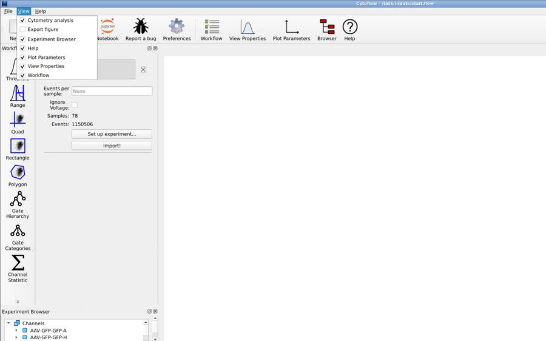
cu key Escape; which xdotool wmctrl xwininfo; echo $DISPLAY; cu 2>&1 | head -30
/usr/bin/xdotool
/usr/bin/xwininfo
:1
# Computer-use helper: the agent's only way to act on the screen.
# cu screenshot [path] -> PNG of the screen (default /tmp/screen.png); prints path
# cu click X Y [left|right|double]
# cu move X Y | cu drag X1 Y1 X2 Y2 | cu scroll X Y up|down [N]
# cu type "text" (keystrokes) | cu paste "text" (clipboard) | cu key KEYS (e.g. ctrl+s, Return)
# cu cursor -> current mouse position
export DISPLAY=${DISPLAY:-:1}
cmd=$1; shiftxwininfo -root -tree | grep -i -E "cytoflow|0x" | head -20
xwininfo: Window id: 0x21f (the root window) (has no name)
Root window id: 0x21f (the root window) (has no name)
Parent window id: 0x0 (none)
0xe00025 "cytoflow": ("cytoflow" "cytoflow") 213x170+44+41 +44+41
0xe00019 "Qt Clipboard Requestor Window": () 3x3+0+0 +0+0
0xe00008 "cytoflow": () 1x1+0+0 +0+0
0xe00004 "Qt Selection Owner for cytoflow": () 3x3+0+0 +0+0
0xc0000e "Openbox": ("" (none)) 1x1+-100+-100 +-100+-100
0xc00062 (has no name): () 1x1+0+0 +0+0
0xc00063 (has no name): () 1x1+0+0 +1+1
0xc00060 (has no name): () 1x1+0+0 +0+0
0xc00061 (has no name): () 1x1+0+0 +1+1
0xc0005d (has no name): () 1x1+0+0 +0+0
0xc0005e (has no name): () 1x1+0+0 +1+1
0xc00059 (has no name): ("OPENBOX_FOCUS_CYCLE_POPUP" "OPENBOX_FOCUS_CYCLE_POPUP") 1x1+0+0 +0+0
0xc0005c (has no name): () 1x1+0+0 +1+1
0xc0005b (has no name): () 1x1+0+0 +1+1
0xc0005a (has no name): () 1x1+0+0 +1+1
0xc00056 (has no name): () 1x1+0+0 +0+0
0xc00058 (has no name): () 1x1+0+0 +1+1xdotool search --name "Cytoflow -" | while read w; do xdotool getwindowname $w; xdotool getwindowgeometry $w; done; xdotool getdisplaygeometry
Cytoflow - /task/inputs/start.flow Window 14680070 Position: 2,40 (screen: 0) Geometry: 2082x1171 1440 900
xdotool windowmove 14680070 0 0; xdotool windowsize 14680070 1438 878; sleep 2; xdotool getwindowgeometry 14680070; cu screenshot /tmp/screen.png
{
"file_path": "/tmp/screen.png"
}Window 14680070 Position: 1,20 (screen: 0) Geometry: 1438x878 /tmp/screen.png
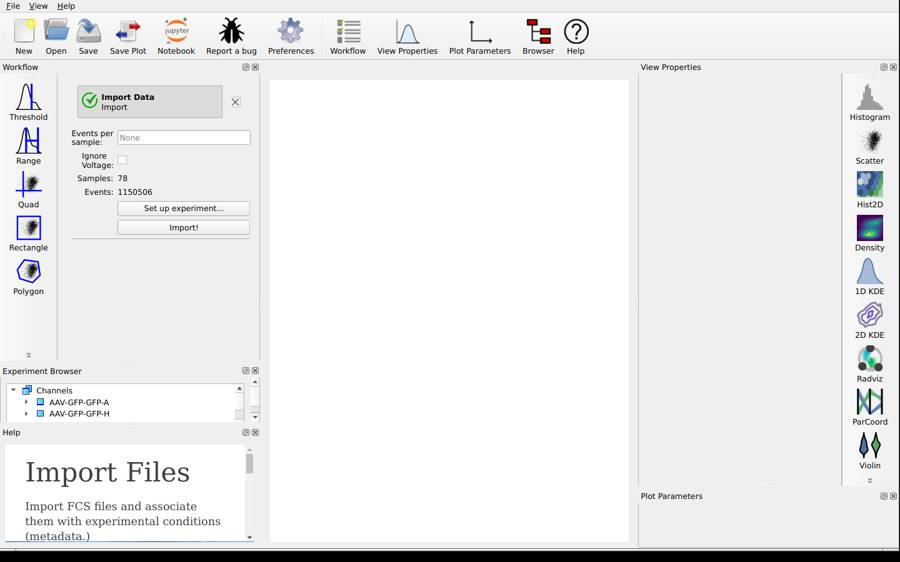
cu click 408 692; sleep 1; cu click 408 593; sleep 1; cu click 1391 230; sleep 3; cu screenshot /tmp/screen.png
{
"file_path": "/tmp/screen.png"
}/tmp/screen.png
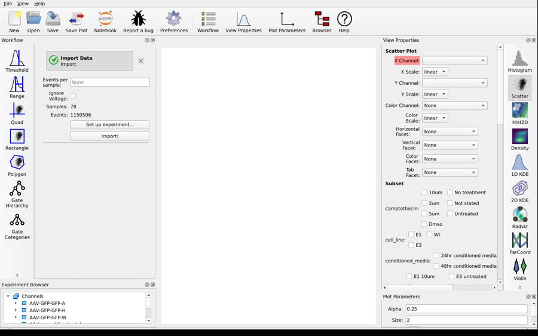
cu click 1391 370; sleep 2; cu click 1216 162; sleep 1; cu screenshot /tmp/screen.png
{
"file_path": "/tmp/screen.png"
}/tmp/screen.png
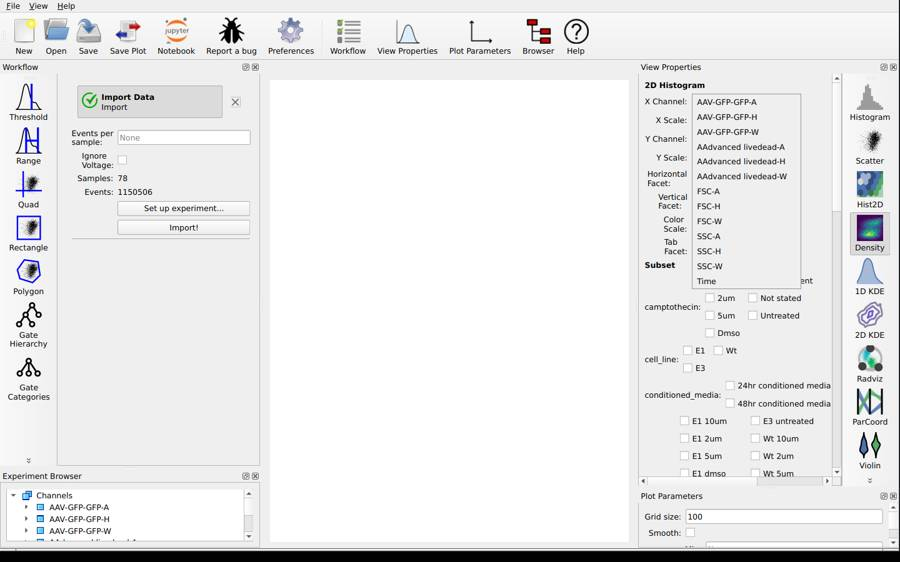
cu click 1133 306; sleep 1; cu click 1190 222; sleep 1; cu screenshot /tmp/screen.png
{
"file_path": "/tmp/screen.png"
}/tmp/screen.png
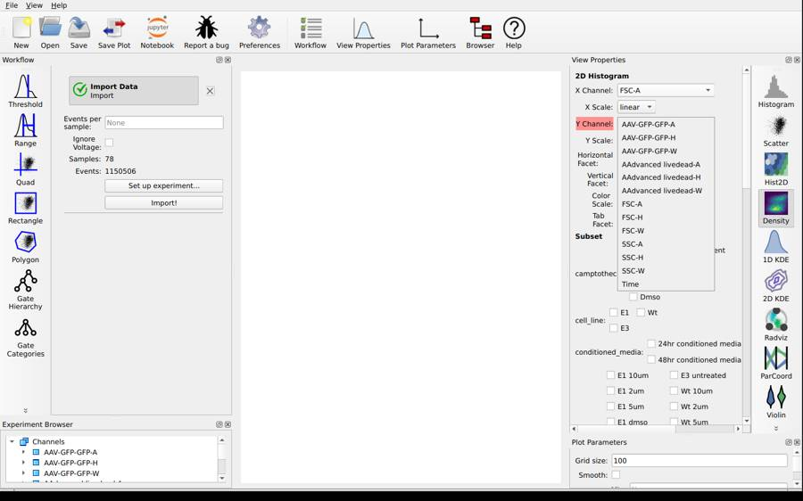
cu click 1133 438; sleep 6; cu screenshot /tmp/screen.png
{
"file_path": "/tmp/screen.png"
}/tmp/screen.png

cu click 1140 359; sleep 1; cu screenshot /tmp/screen.png
{
"file_path": "/tmp/screen.png"
}/tmp/screen.png
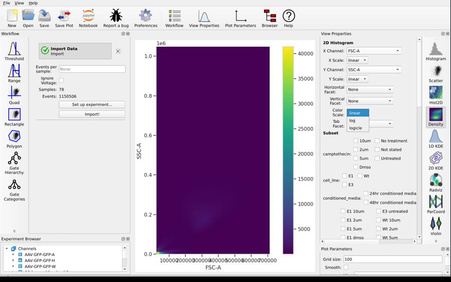
cu click 1125 385; sleep 6; cu screenshot /tmp/screen.png
{
"file_path": "/tmp/screen.png"
}/tmp/screen.png

cu click 1391 165; sleep 2; cu screenshot /tmp/screen.png
{
"file_path": "/tmp/screen.png"
}/tmp/screen.png
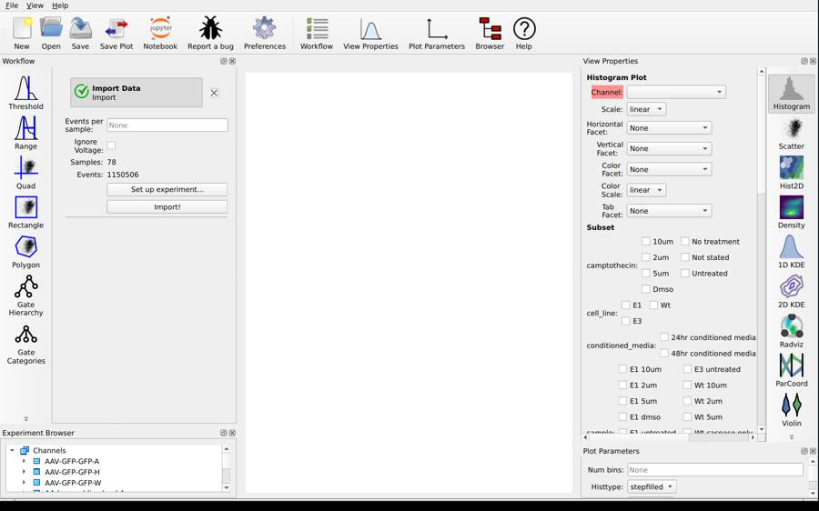
cu click 1188 162; sleep 1; cu click 1130 451; sleep 3; cu click 1175 225; sleep 1; cu screenshot /tmp/screen.png
{
"file_path": "/tmp/screen.png"
}/tmp/screen.png
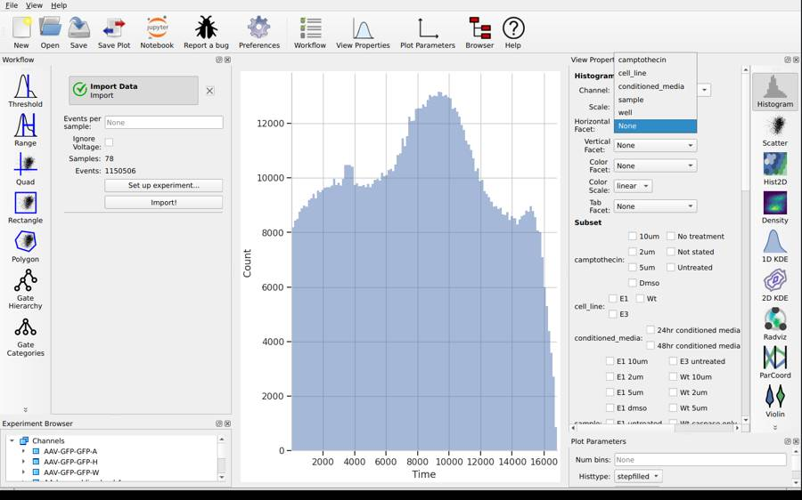
cu key Escape; sleep 0.5; cu scroll 1220 840 down 5; sleep 1; cu screenshot /tmp/screen.png
{
"file_path": "/tmp/screen.png"
}/tmp/screen.png
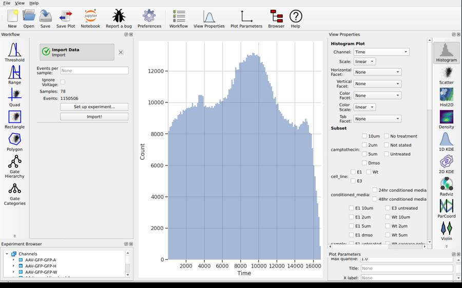
cu drag 1230 783 1230 420; sleep 1; cu screenshot /tmp/screen.png
{
"file_path": "/tmp/screen.png"
}/tmp/screen.png
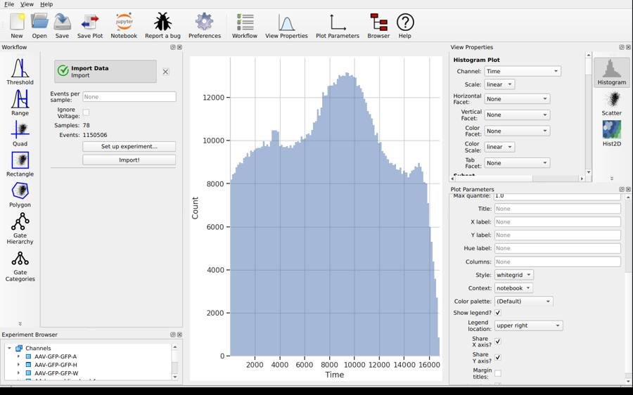
cu click 1268 596; cu type "12"; cu key Return; sleep 1; cu click 1133 814; sleep 1; cu drag 1230 420 1230 640; sleep 1; cu click 1175 225; sleep 1; cu click 1123 203; sleep 25; cu screenshot /tmp/screen.png
{
"file_path": "/tmp/screen.png"
}/tmp/screen.png
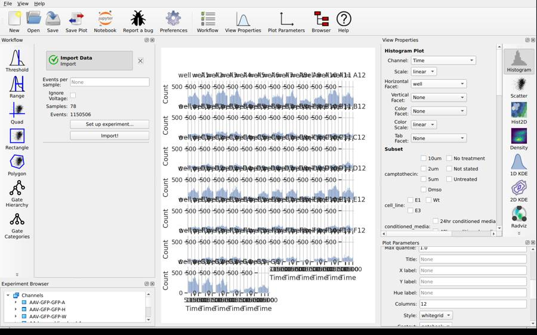
cu click 204 60; sleep 3; cu screenshot /tmp/screen.png
{
"file_path": "/tmp/screen.png"
}/tmp/screen.png
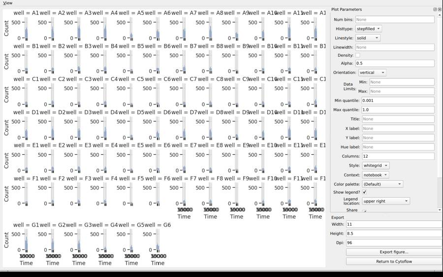
cu scroll 1250 500 down 10; sleep 1; cu screenshot /tmp/screen.png
{
"file_path": "/tmp/screen.png"
}/tmp/screen.png
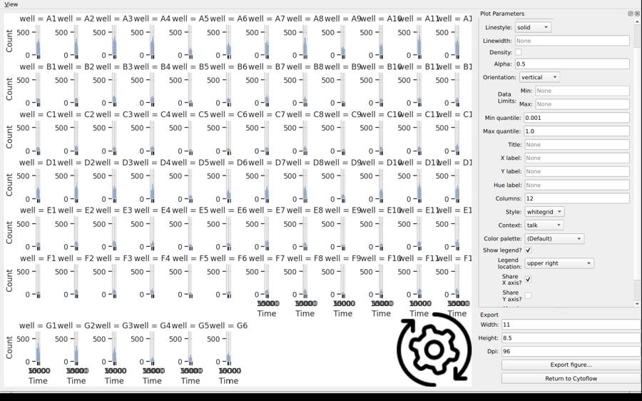
sleep 15; cu click 1220 505; sleep 1; cu screenshot /tmp/screen.png
{
"file_path": "/tmp/screen.png"
}/tmp/screen.png
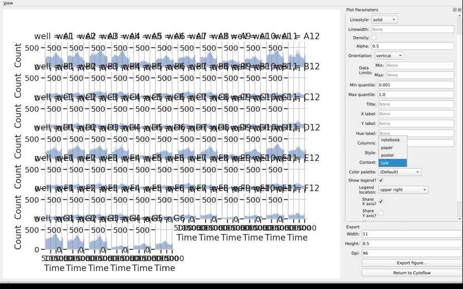
cu click 1203 460; sleep 12; cu click 1280 728 double; cu key ctrl+a; cu type "36"; cu key Tab; sleep 0.5; cu key ctrl+a; cu type "20"; cu key Tab; sleep 0.5; cu key ctrl+a; cu type "70"; cu key Tab; sleep 15; cu screenshot /tmp/screen.png
{
"file_path": "/tmp/screen.png"
}/tmp/screen.png
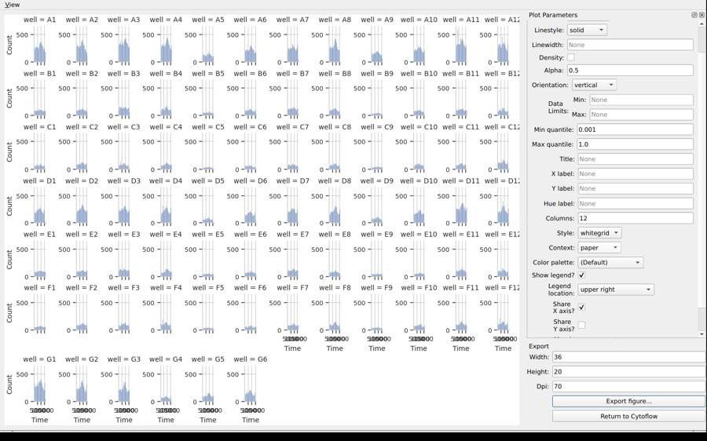
cu click 1280 818; sleep 2; cu screenshot /tmp/screen.png
{
"file_path": "/tmp/screen.png"
}/tmp/screen.png
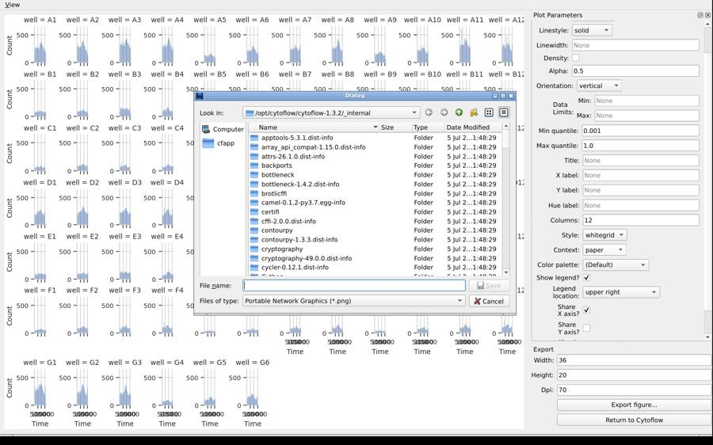
mkdir -p /tmp/qc; cu paste "/tmp/qc/time_hist.png"; sleep 0.5; cu key Return; sleep 15; ls -la /tmp/qc; python3 -c "
from PIL import Image
im=Image.open('/tmp/qc/time_hist.png'); print(im.size)"Exit code 1
total 8
drwxr-xr-x 2 root root 4096 Nov 10 18:53 .
drwxrwxrwx 9 root root 4096 Nov 10 18:53 ..
Traceback (most recent call last):
File "<string>", line 3, in <module>
File "/usr/lib/python3/dist-packages/PIL/Image.py", line 3241, in open
fp = builtins.open(filename, "rb")
^^^^^^^^^^^^^^^^^^^^^^^^^^^^^
FileNotFoundError: [Errno 2] No such file or directory: '/tmp/qc/time_hist.png'sleep 5; ls -la /tmp/qc; cu screenshot /tmp/screen.png
{
"file_path": "/tmp/screen.png"
}total 8 drwxr-xr-x 2 root root 4096 Nov 10 18:53 . drwxrwxrwx 9 root root 4096 Nov 10 18:53 .. /tmp/screen.png
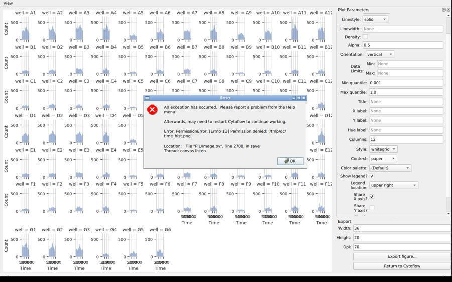
chmod 777 /tmp/qc; cu click 925 513; sleep 1; cu click 1280 818; sleep 2; cu paste "/tmp/qc/time_hist.png"; sleep 0.5; cu key Return; sleep 20; ls -la /tmp/qc; cu screenshot /tmp/screen.png
{
"file_path": "/tmp/qc/time_hist.png"
}total 116 drwxrwxrwx 2 root root 4096 Nov 10 18:53 . drwxrwxrwx 9 root root 4096 Nov 10 18:53 .. -rw-rw-r-- 1 cfapp cfapp 109915 Nov 10 18:53 time_hist.png /tmp/screen.png
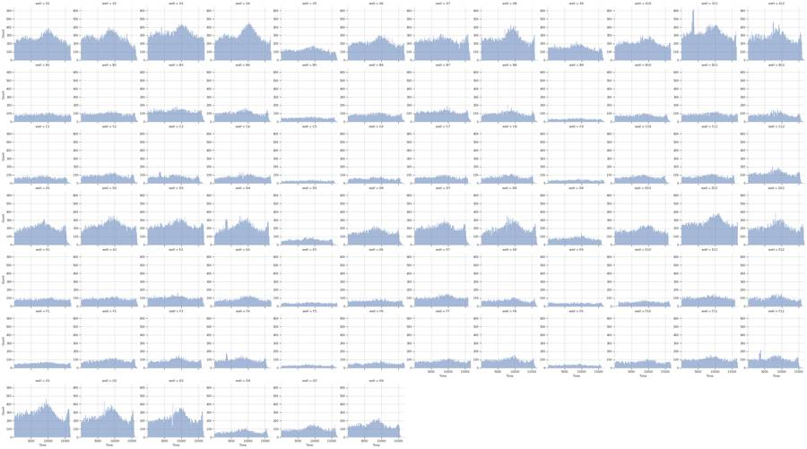
cu click 1280 849; sleep 3; cu click 45 443; sleep 3; cu screenshot /tmp/screen.png
{
"file_path": "/tmp/screen.png"
}/tmp/screen.png
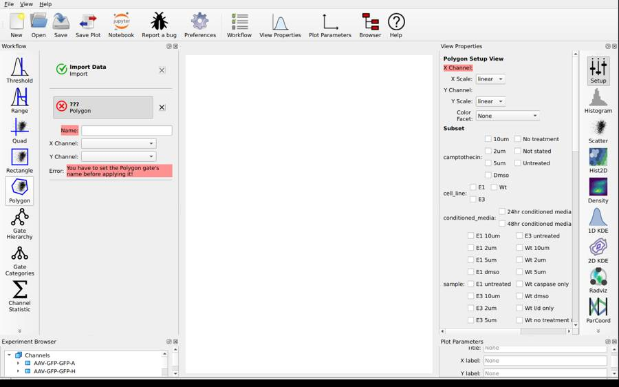
cu click 294 303; cu type "Cells"; cu key Return; sleep 1; cu click 275 334; sleep 1; cu screenshot /tmp/screen.png
{
"file_path": "/tmp/screen.png"
}/tmp/screen.png
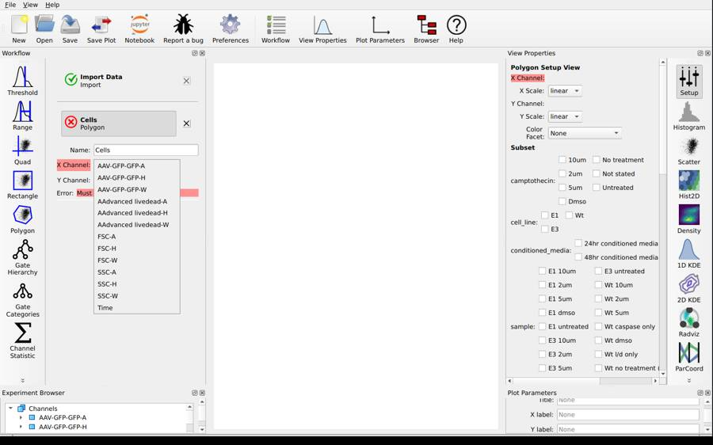
cu click 215 479; sleep 1; cu click 275 364; sleep 1; cu click 215 581; sleep 20; cu screenshot /tmp/screen.png
{
"file_path": "/tmp/screen.png"
}/tmp/screen.png
cu click 553 792; sleep 0.7; cu click 553 672; sleep 0.7; cu click 693 457; sleep 0.7; cu click 965 356; sleep 0.7; cu click 965 697; sleep 0.7; cu click 748 783; sleep 0.7; cu click 623 795 double; sleep 20; cu screenshot /tmp/screen.png
{
"file_path": "/tmp/screen.png"
}/tmp/screen.png
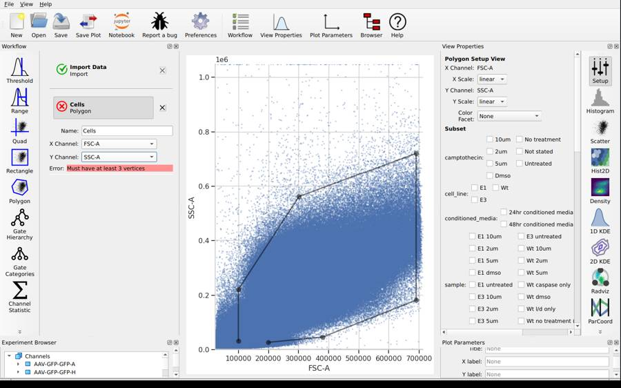
cu click 553 792; sleep 20; cu screenshot /tmp/screen.png
{
"file_path": "/tmp/screen.png"
}/tmp/screen.png
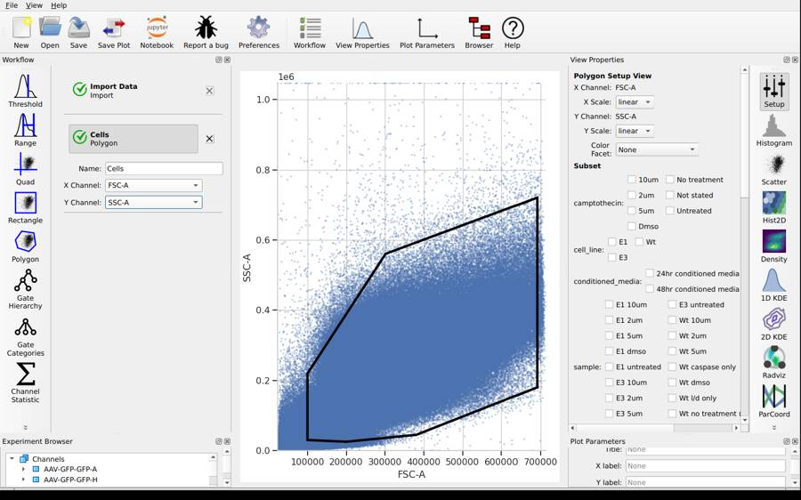
cu click 20 10; sleep 1; cu screenshot /tmp/screen.png
{
"file_path": "/tmp/screen.png"
}/tmp/screen.png
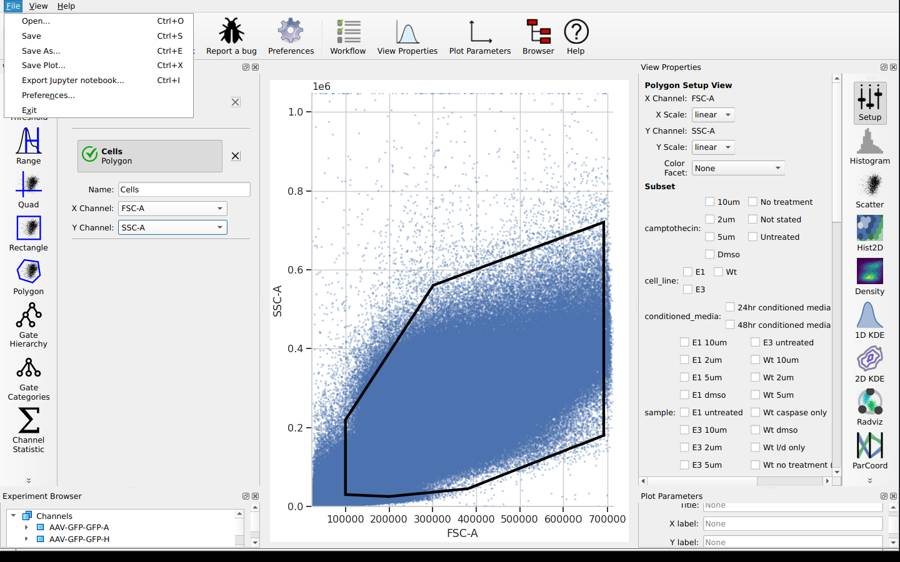
cu click 65 81; sleep 2; cu paste "/task/outputs/workflow.flow"; sleep 0.5; cu key Return; sleep 3; cu screenshot /tmp/screen.png; ls -la /task/outputs; grep -n -A12 "polygon" /task/outputs/workflow.flow | head -60
/tmp/screen.png total 72 drwxrwsrwx 2 agent task 4096 Nov 10 18:56 . drwxr-xr-x 4 root root 4096 Nov 5 22:00 .. -rw-rw-r-- 1 cfapp task 61817 Nov 10 18:56 workflow.flow 2426: current_view: &id005 !polygon-view;3 2427- current_plot: null 2428- huefacet: '' 2429- huescale: linear 2430: op: &id004 !polygon;1 2431- name: Cells 2432- vertices: 2433- - !!python/tuple 2434- - 99818.44183389124 2435- - 30230.838750078212 2436- - !!python/tuple 2437- - 99818.44183389124 2438- - 219686.04246971203 2439- - !!python/tuple 2440- - 301545.8391857315 2441- - 560705.4091650529 2442- - !!python/tuple -- 2461: plot_params: !polygon-params;1 2462- alpha: 0.25 2463- col_wrap: null 2464- density: false 2465- despine: true 2466- gridsize: 50 2467- huelabel: '' 2468- legend: true 2469- marker: o 2470- max_quantile: 1.0 2471- min_quantile: 0.001 2472- s: 2 2473- sharex: true
cu click 45 443; sleep 3; cu screenshot /tmp/screen.png
{
"file_path": "/tmp/screen.png"
}/tmp/screen.png
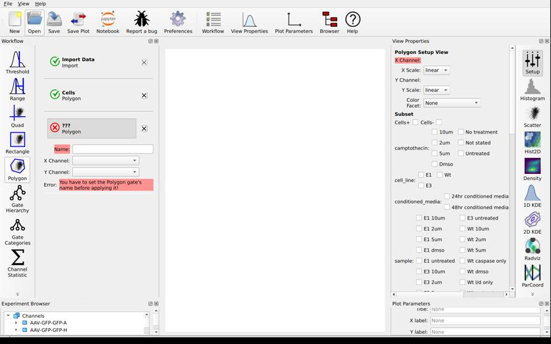
cu click 1085 320; sleep 1; cu click 294 390; cu type "Singlets"; cu key Return; sleep 1; cu click 275 420; sleep 1; cu click 215 565; sleep 1; cu click 275 450; sleep 1; cu screenshot /tmp/screen.png
{
"file_path": "/tmp/screen.png"
}/tmp/screen.png
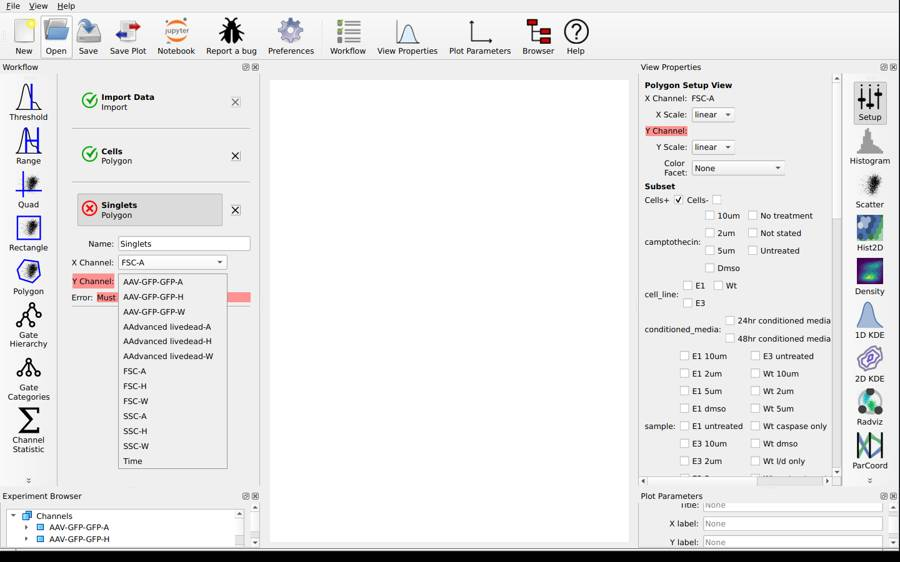
cu click 215 619; sleep 20; cu screenshot /tmp/screen.png
{
"file_path": "/tmp/screen.png"
}/tmp/screen.png
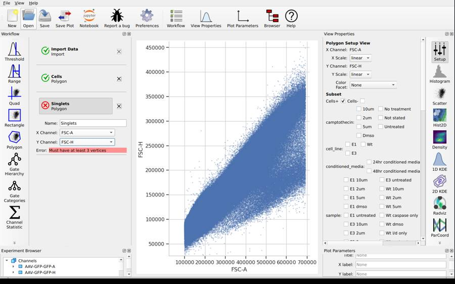
cu scroll 1060 840 up 20; sleep 1; cu screenshot /tmp/screen.png
{
"file_path": "/tmp/screen.png"
}/tmp/screen.png
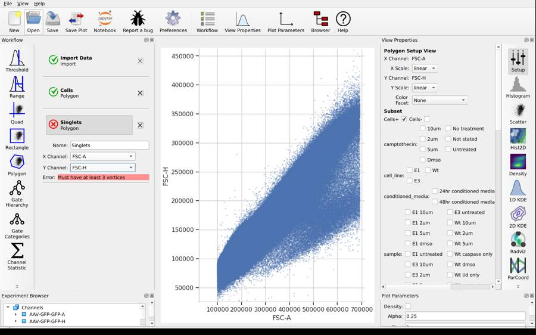
cu click 1096 823; sleep 12; cu screenshot /tmp/screen.png
{
"file_path": "/tmp/screen.png"
}/tmp/screen.png
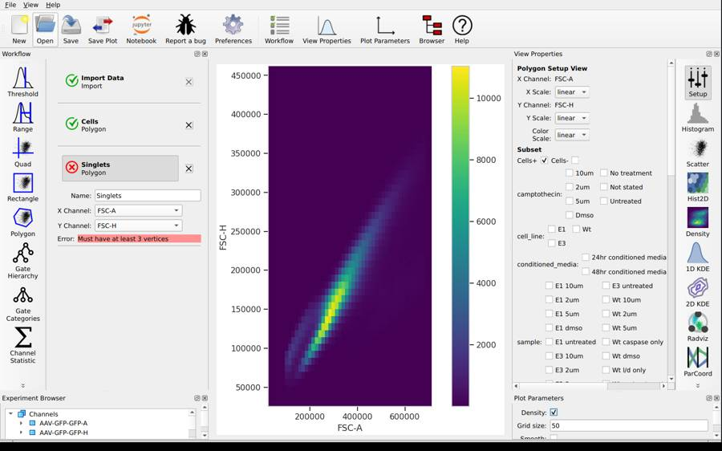
cu click 1140 269; sleep 1; cu click 1125 295; sleep 12; cu screenshot /tmp/screen.png
{
"file_path": "/tmp/screen.png"
}/tmp/screen.png
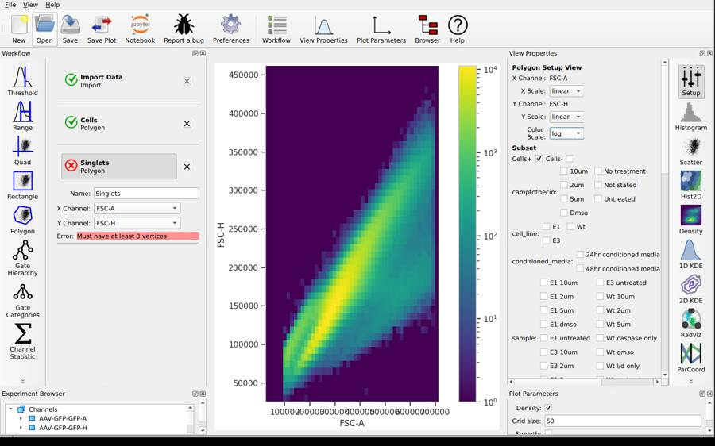
cu click 568 804; sleep 0.7; cu click 568 680; sleep 0.7; cu click 877 179; sleep 0.7; cu click 877 342; sleep 0.7; cu click 568 804; sleep 15; cu screenshot /tmp/screen.png
{
"file_path": "/tmp/screen.png"
}/tmp/screen.png
cu click 568 804; sleep 0.7; cu click 568 680; sleep 0.7; cu click 877 179; sleep 0.7; cu click 877 361; sleep 0.7; cu click 598 781; sleep 0.7; cu click 568 804; sleep 15; cu screenshot /tmp/screen.png
{
"file_path": "/tmp/screen.png"
}/tmp/screen.png
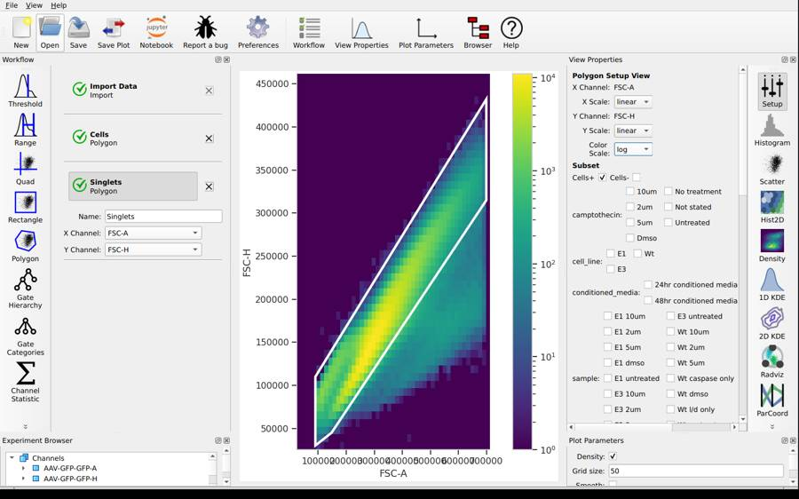
cu click 1391 440; sleep 3; cu screenshot /tmp/screen.png
{
"file_path": "/tmp/screen.png"
}/tmp/screen.png
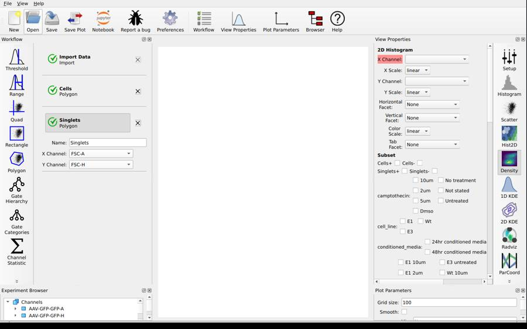
cu click 1085 446; sleep 0.5; cu click 1104 468; sleep 0.5; cu click 1190 162; sleep 1; cu click 1160 163; sleep 1; cu click 1140 192; sleep 1; cu click 1135 242; sleep 1; cu click 1190 222; sleep 1; cu click 1185 295; sleep 2; cu click 1140 252; sleep 1; cu click 1135 302; sleep 2; cu click 1140 359; sleep 1; cu click 1125 385; sleep 12; cu screenshot /tmp/screen.png
{
"file_path": "/tmp/screen.png"
}/tmp/screen.png
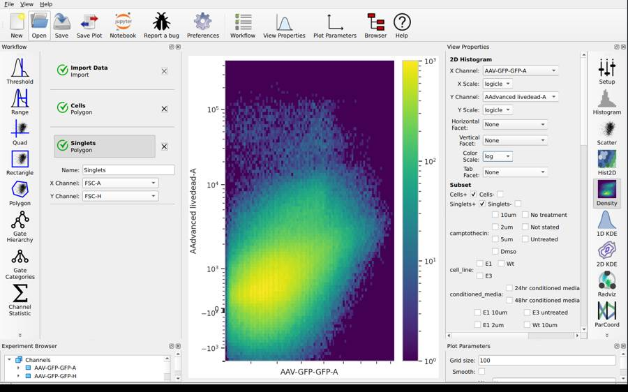
cu click 1391 235; sleep 3; cu screenshot /tmp/screen.png
{
"file_path": "/tmp/screen.png"
}/tmp/screen.png
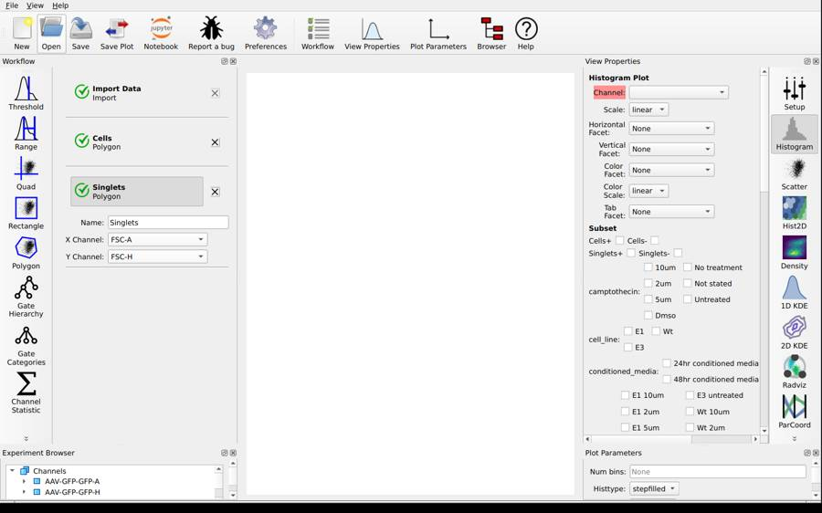
cu click 1085 422; sleep 0.5; cu click 1104 444; sleep 0.5; cu click 204 60; sleep 3; cu click 1290 507; cu type "12"; cu key Return; sleep 1; cu click 1220 568; sleep 1; cu screenshot /tmp/screen.png
{
"file_path": "/tmp/screen.png"
}/tmp/screen.png
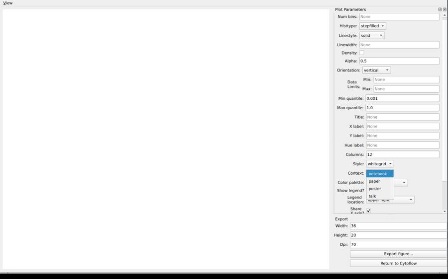
cu click 1203 585; sleep 1; cu click 1163 170; sleep 1; cu click 1280 849; sleep 3; cu click 1188 162; sleep 1; cu click 1160 163; sleep 2; cu click 1135 192; sleep 1; cu click 1130 242; sleep 3; cu click 1175 225; sleep 1; cu screenshot /tmp/screen.png
{
"file_path": "/tmp/screen.png"
}/tmp/screen.png
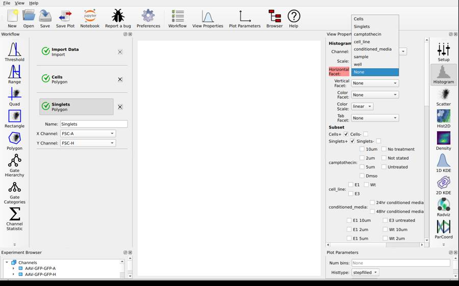
cu click 1123 203; sleep 25; cu screenshot /tmp/screen.png
{
"file_path": "/tmp/screen.png"
}/tmp/screen.png
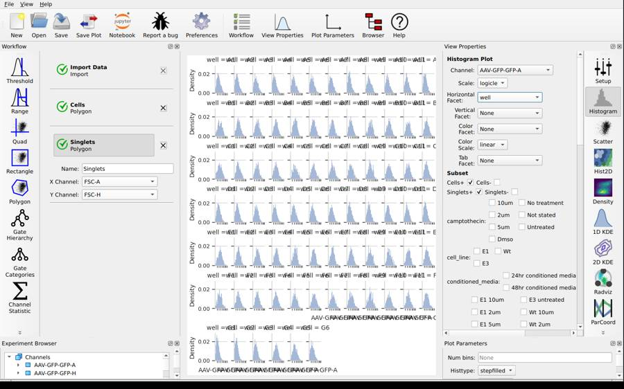
cu click 204 60; sleep 15; cu click 1280 818; sleep 2; cu paste "/tmp/qc/bl1_hist.png"; sleep 0.5; cu key Return; sleep 25; ls -la /tmp/qc; cu click 1280 849; sleep 3
{
"file_path": "/tmp/qc/bl1_hist.png"
}total 224 drwxrwxrwx 2 root root 4096 Nov 10 19:01 . drwxrwxrwx 9 root root 4096 Nov 10 19:01 .. -rw-rw-r-- 1 cfapp cfapp 108399 Nov 10 19:01 bl1_hist.png -rw-rw-r-- 1 cfapp cfapp 109915 Nov 10 18:53 time_hist.png
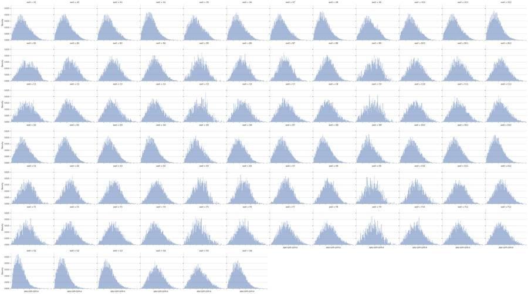
cu click 1188 162; sleep 1; cu click 1180 235; sleep 25; cu click 204 60; sleep 15; cu click 1280 818; sleep 2; cu paste "/tmp/qc/bl2_hist.png"; sleep 0.5; cu key Return; sleep 25; ls -la /tmp/qc; cu click 1280 849; sleep 3
{
"file_path": "/tmp/qc/bl2_hist.png"
}total 344 drwxrwxrwx 2 root root 4096 Nov 10 19:03 . drwxrwxrwx 9 root root 4096 Nov 10 19:02 .. -rw-rw-r-- 1 cfapp cfapp 108399 Nov 10 19:01 bl1_hist.png -rw-rw-r-- 1 cfapp cfapp 119115 Nov 10 19:03 bl2_hist.png -rw-rw-r-- 1 cfapp cfapp 109915 Nov 10 18:53 time_hist.png
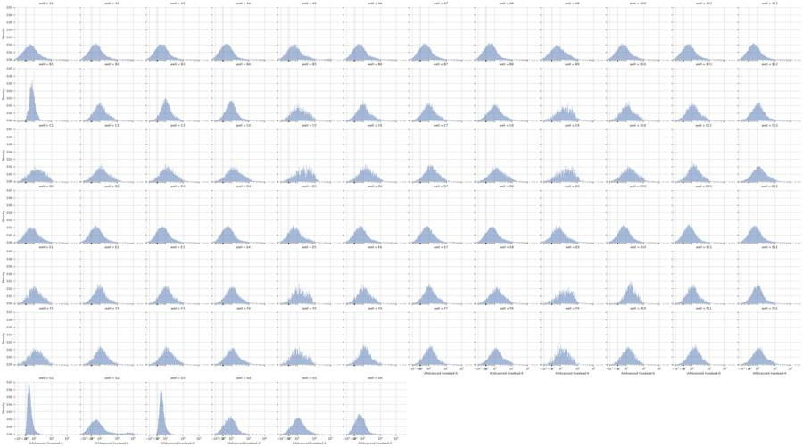
cu click 45 235; sleep 3; cu screenshot /tmp/screen.png
{
"file_path": "/tmp/screen.png"
}/tmp/screen.png
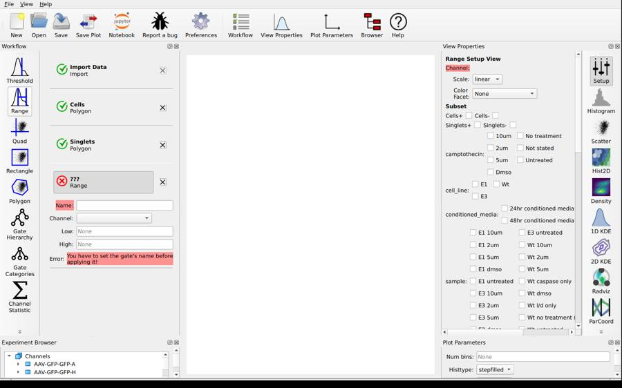
cu click 1085 268; sleep 0.3; cu click 1104 290; sleep 0.3; cu click 1208 708; sleep 0.3; cu click 1208 652; sleep 0.3; cu click 1208 736; sleep 0.3; cu click 288 476; cu type "Live"; cu key Return; sleep 1; cu click 263 506; sleep 1; cu screenshot /tmp/screen.png
{
"file_path": "/tmp/screen.png"
}/tmp/screen.png
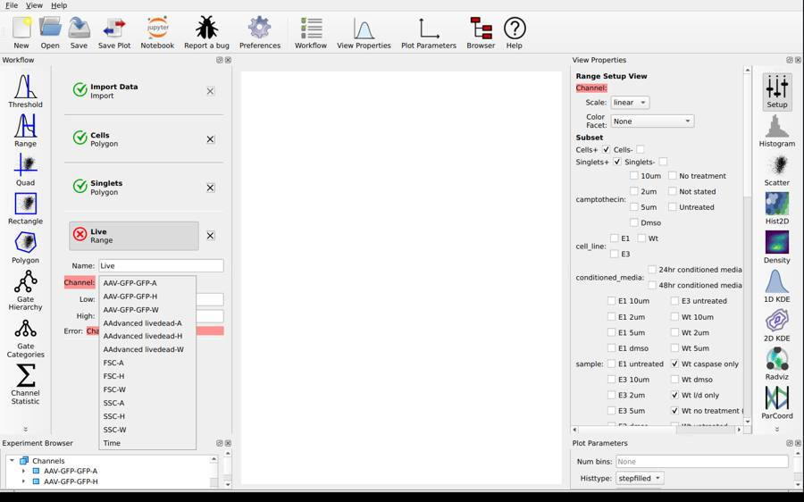
cu click 255 579; sleep 2; cu click 1125 184; sleep 1; cu click 1120 234; sleep 2; cu click 1165 218; sleep 1; cu screenshot /tmp/screen.png
{
"file_path": "/tmp/screen.png"
}/tmp/screen.png
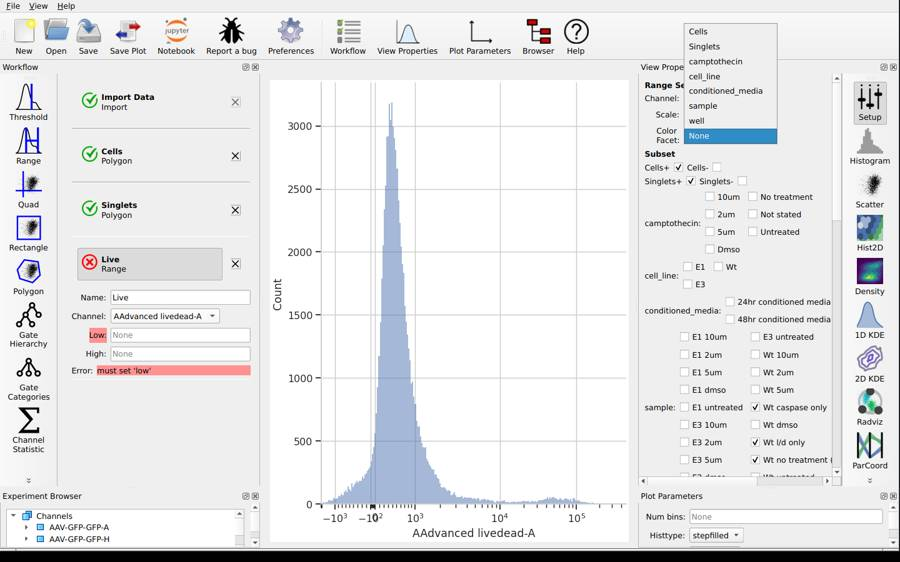
cu click 1125 170; sleep 8; cu screenshot /tmp/screen.png
{
"file_path": "/tmp/screen.png"
}/tmp/screen.png
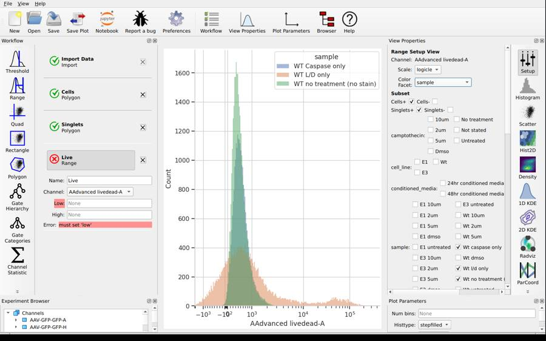
cu click 288 537; cu type "-1000000"; cu key Return; sleep 1; cu click 288 567; cu type "10000"; cu key Return; sleep 8; cu screenshot /tmp/screen.png
{
"file_path": "/tmp/screen.png"
}/tmp/screen.png
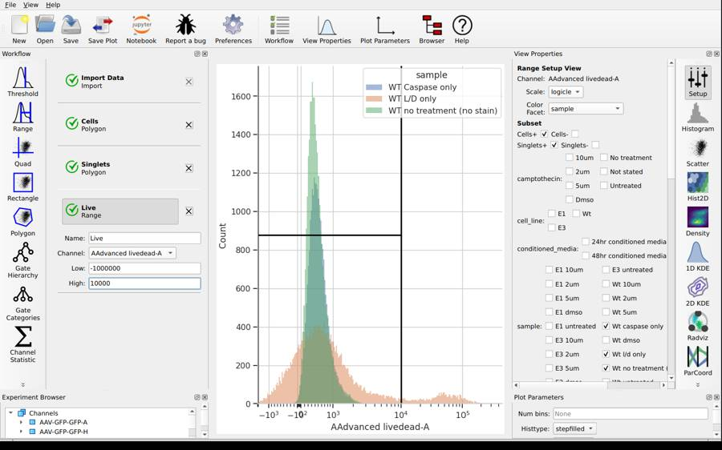
cu click 45 165; sleep 3; cu screenshot /tmp/screen.png
{
"file_path": "/tmp/screen.png"
}/tmp/screen.png
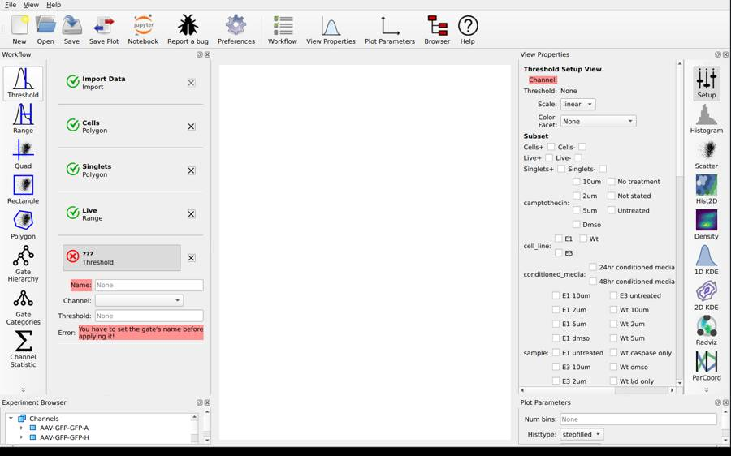
cu click 1085 290; sleep 0.3; cu click 1081 312; sleep 0.3; cu click 1104 334; sleep 0.3; cu click 1208 696; sleep 0.3; cu click 1208 752; sleep 0.3; cu click 292 563; cu type "Casp_pos"; cu key Return; sleep 1; cu click 272 593; sleep 1; cu click 240 594; sleep 3; cu click 1138 206; sleep 1; cu click 1130 256; sleep 3; cu click 1175 239; sleep 1; cu screenshot /tmp/screen.png
{
"file_path": "/tmp/screen.png"
}/tmp/screen.png
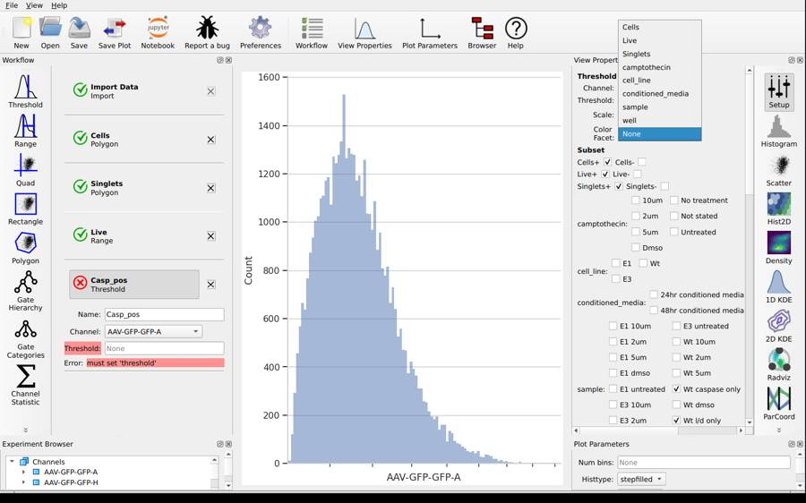
cu click 1135 192; sleep 4; cu click 1138 206; sleep 1; cu click 1130 232; sleep 8; cu screenshot /tmp/screen.png
{
"file_path": "/tmp/screen.png"
}/tmp/screen.png
cu click 1138 206; sleep 1; cu screenshot /tmp/screen.png
{
"file_path": "/tmp/screen.png"
}/tmp/screen.png
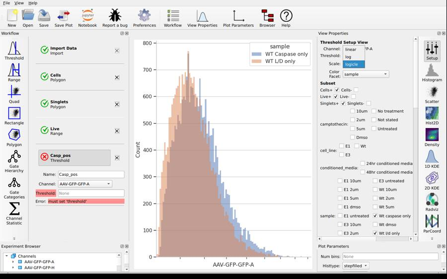
cu click 1125 184; sleep 8; cu screenshot /tmp/screen.png
{
"file_path": "/tmp/screen.png"
}/tmp/screen.png
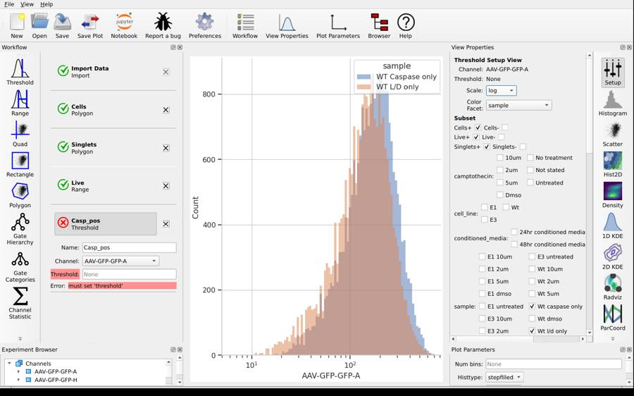
cu click 292 623; cu type "500"; cu key Return; sleep 8; cu screenshot /tmp/screen.png
{
"file_path": "/tmp/screen.png"
}/tmp/screen.png
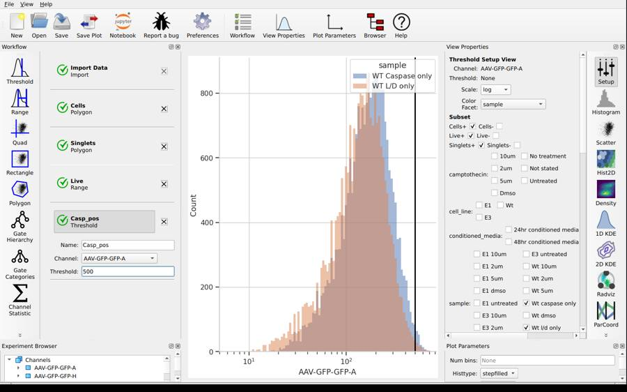
cu click 45 683; sleep 3; cu screenshot /tmp/screen.png
{
"file_path": "/tmp/screen.png"
}/tmp/screen.png
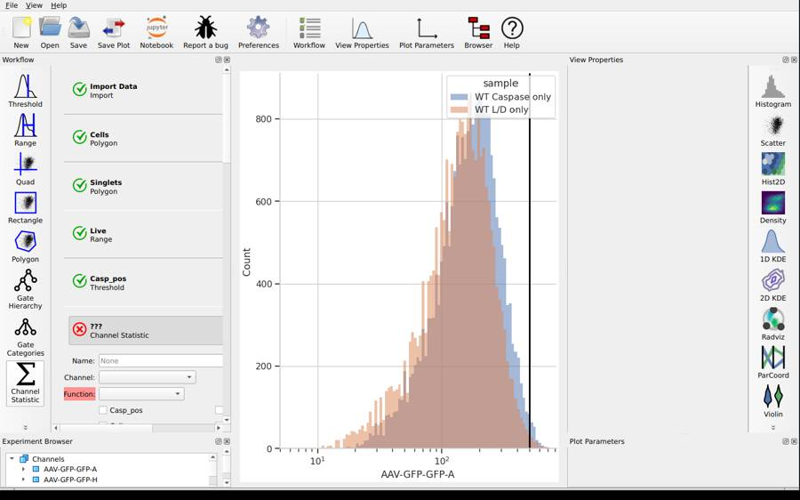
cu click 408 794; sleep 1; cu scroll 250 600 down 10; sleep 1; cu screenshot /tmp/screen.png
{
"file_path": "/tmp/screen.png"
}/tmp/screen.png
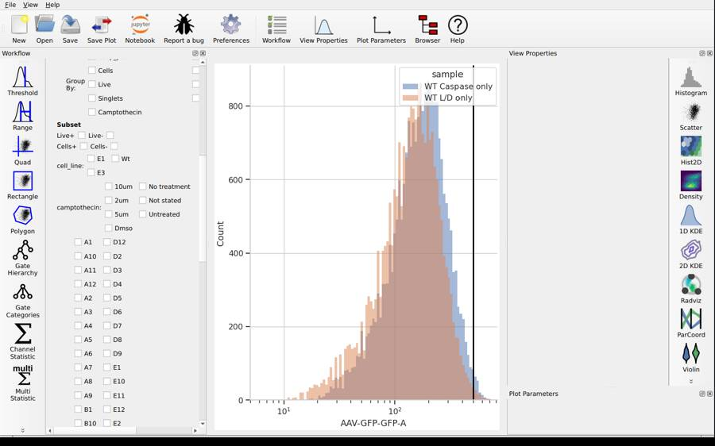
cu drag 420 490 640 490; sleep 2; cu scroll 300 400 up 3; sleep 1; cu screenshot /tmp/screen.png
{
"file_path": "/tmp/screen.png"
}/tmp/screen.png
cu click 390 212; cu type "Count_scatter"; cu key Return; sleep 1; cu click 265 242; sleep 1; cu screenshot /tmp/screen.png
{
"file_path": "/tmp/screen.png"
}/tmp/screen.png
cu click 205 387; sleep 1; cu click 255 272; sleep 1; cu screenshot /tmp/screen.png
{
"file_path": "/tmp/screen.png"
}/tmp/screen.png
cu click 205 274; sleep 1; cu click 185 329; sleep 1; cu click 185 385; sleep 1; cu click 403 385; sleep 6; cu screenshot /tmp/screen.png
{
"file_path": "/tmp/screen.png"
}/tmp/screen.png
cu click 45 683; sleep 3; cu scroll 380 500 down 15; sleep 1; cu screenshot /tmp/screen.png
{
"file_path": "/tmp/screen.png"
}/tmp/screen.png
cu scroll 380 500 down 60; sleep 1; cu screenshot /tmp/screen.png
{
"file_path": "/tmp/screen.png"
}/tmp/screen.png
cu click 188 497; sleep 1; cu scroll 380 500 up 13; sleep 1; cu screenshot /tmp/screen.png
{
"file_path": "/tmp/screen.png"
}/tmp/screen.png
cu scroll 380 500 up 6; sleep 1; cu screenshot /tmp/screen.png
{
"file_path": "/tmp/screen.png"
}/tmp/screen.png
cu click 168 397; sleep 1; cu click 390 127; cu type "Count_fluor"; cu key Return; sleep 1; cu click 265 157; sleep 1; cu click 205 301; sleep 1; cu click 255 187; sleep 1; cu click 205 189; sleep 1; cu click 185 216; sleep 1; cu click 185 272; sleep 1; cu click 403 300; sleep 6; cu screenshot /tmp/screen.png
{
"file_path": "/tmp/screen.png"
}/tmp/screen.png
cu click 1391 769; sleep 1; cu screenshot /tmp/screen.png
{
"file_path": "/tmp/screen.png"
}/tmp/screen.png
cu click 1397 515; sleep 3; cu screenshot /tmp/screen.png
{
"file_path": "/tmp/screen.png"
}/tmp/screen.png
cu click 1170 162; sleep 1; cu screenshot /tmp/screen.png
{
"file_path": "/tmp/screen.png"
}/tmp/screen.png
cu click 1156 188; sleep 2; cu click 1142 222; sleep 1; cu screenshot /tmp/screen.png
{
"file_path": "/tmp/screen.png"
}/tmp/screen.png
cu click 1133 200; sleep 2; cu click 1150 192; sleep 1; cu screenshot /tmp/screen.png
{
"file_path": "/tmp/screen.png"
}/tmp/screen.png
cu click 1138 194; sleep 2; cu click 1155 283; sleep 1; cu screenshot /tmp/screen.png
{
"file_path": "/tmp/screen.png"
}/tmp/screen.png
cu click 1133 237; sleep 2; cu click 1155 313; sleep 1; cu click 1140 241; sleep 5; cu screenshot /tmp/screen.png
{
"file_path": "/tmp/screen.png"
}/tmp/screen.png
sleep 5; cu scroll 1200 600 down 30; sleep 1; cu screenshot /tmp/screen.png
{
"file_path": "/tmp/screen.png"
}/tmp/screen.png
cu scroll 1200 400 up 30; sleep 1; cu click 1215 373; sleep 2; cu screenshot /tmp/screen.png
{
"file_path": "/tmp/screen.png"
}/tmp/screen.png
mkdir -p /tmp/exp; chmod 777 /tmp/exp; cu paste "/tmp/exp/count_fluor_t500.csv"; sleep 0.5; cu key Return; sleep 4; ls -la /tmp/exp; head -20 /tmp/exp/count_fluor_t500.csv; cu screenshot /tmp/screen.png
total 12 drwxrwxrwx 2 root root 4096 Nov 10 19:10 . drwxrwxrwx 10 root root 4096 Nov 10 19:10 .. -rw-rw-r-- 1 cfapp cfapp 2689 Nov 10 19:10 count_fluor_t500.csv None,Live = False,None,Live = True,None None,Casp_pos = False,Casp_pos = False,Casp_pos = True,Casp_pos = True well = A1,293.0,10.0,19025.0,203.0 well = A10,173.0,3.0,16043.0,179.0 well = A11,185.0,9.0,23489.0,224.0 well = A12,303.0,12.0,27288.0,151.0 well = A2,299.0,6.0,19250.0,175.0 well = A3,234.0,4.0,21270.0,189.0 well = A4,336.0,5.0,30661.0,147.0 well = A5,247.0,6.0,8725.0,108.0 well = A6,200.0,7.0,15986.0,145.0 well = A7,170.0,6.0,16563.0,125.0 well = A8,230.0,9.0,26415.0,116.0 well = A9,86.0,2.0,10404.0,164.0 well = B1,1.0,None,3794.0,209.0 well = B10,40.0,8.0,3765.0,175.0 well = B11,38.0,5.0,4921.0,197.0 well = B12,79.0,16.0,7206.0,274.0 well = B2,37.0,2.0,4586.0,162.0 well = B3,11.0,1.0,5994.0,234.0 /tmp/screen.png
cd /tmp/exp; python3 - <<'EOF'
import pandas as pd, numpy as np
df=pd.read_csv('count_fluor_t500.csv',header=None,skiprows=2,na_values=['None'])
df.columns=['well','dead_neg','dead_pos','live_neg','live_pos']
df['well']=df.well.str.replace('well = ','')
df=df.fillna(0)
lay=pd.read_csv('/task/inputs/plate_layout.csv')
df=df.merge(lay[['well','sample','conditioned_media']],on='well')
df['singlets']=df[['dead_neg','dead_pos','live_neg','live_pos']].sum(axis=1)
df['live%']=100*(df.live_neg+df.live_pos)/df.singlets
df['casp%live']=100*df.live_pos/(df.live_neg+df.live_pos)
df['casp%dead']=100*df.dead_pos/(df.dead_neg+df.dead_pos)
df['r']=df.well.str[0]; df['c']=df.well.str[1:].astype(int)
df=df.sort_values(['r','c'])
pd.set_option('display.width',200); pd.set_option('display.max_rows',100)
print(df[['well','sample','conditioned_media','singlets','live%','casp%live','casp%dead']].round(2).to_string())
EOFwell sample conditioned_media singlets live% casp%live casp%dead 0 A1 WT 10uM 24hr conditioned media 19531.0 98.45 1.06 3.30 4 A2 WT 5uM 24hr conditioned media 19730.0 98.45 0.90 1.97 5 A3 WT 2uM 24hr conditioned media 21697.0 98.90 0.88 1.68 6 A4 WT DMSO 24hr conditioned media 31149.0 98.91 0.48 1.47 7 A5 WT 10uM 48hr conditioned media 9086.0 97.22 1.22 2.37 8 A6 WT 5uM 48hr conditioned media 16338.0 98.73 0.90 3.38 9 A7 WT 2uM 48hr conditioned media 16864.0 98.96 0.75 3.41 10 A8 WT DMSO 48hr conditioned media 26770.0 99.11 0.44 3.77 11 A9 WT 10uM No conditioned media 10656.0 99.17 1.55 2.27 1 A10 WT 5uM No conditioned media 16398.0 98.93 1.10 1.70 2 A11 WT 2uM No conditioned media 23907.0 99.19 0.94 4.64 3 A12 WT DMSO No conditioned media 27754.0 98.87 0.55 3.81 12 B1 E1 10uM 24hr conditioned media 4004.0 99.98 5.22 0.00 16 B2 E1 5uM 24hr conditioned media 4787.0 99.19 3.41 5.13 17 B3 E1 2uM 24hr conditioned media 6240.0 99.81 3.76 8.33 18 B4 E1 DMSO 24hr conditioned media 9715.0 99.39 3.02 13.56 19 B5 E1 10uM 48hr conditioned media 2310.0 97.49 3.15 8.62 20 B6 E1 5uM 48hr conditioned media 5249.0 98.74 1.97 4.55 21 B7 E1 2uM 48hr conditioned media 6362.0 99.09 2.41 12.07 22 B8 E1 DMSO 48hr conditioned media 8655.0 98.39 1.77 12.23 23 B9 E1 10uM No conditioned media 1484.0 96.90 4.24 2.17 13 B10 E1 5uM No conditioned media 3988.0 98.80 4.44 16.67 14 B11 E1 2uM No conditioned media 5161.0 99.17 3.85 11.63 15 B12 E1 DMSO No conditioned media 7575.0 98.75 3.66 16.84 24 C1 E3 10uM 24hr conditioned media 3804.0 98.90 4.94 9.52 28 C2 E3 5uM 24hr conditioned media 5725.0 98.08 4.29 9.09 29 C3 E3 2uM 24hr conditioned media 5009.0 98.26 4.39 12.64 30 C4 E3 DMSO 24hr conditioned media 6120.0 96.31 4.58 19.03 31 C5 E3 10uM 48hr conditioned media 1453.0 94.56 4.22 7.59 32 C6 E3 5uM 48hr conditioned media 3168.0 97.54 4.30 7.69 33 C7 E3 2uM 48hr conditioned media 4432.0 98.29 5.23 13.16 34 C8 E3 DMSO 48hr conditioned media 5856.0 96.47 4.18 14.01 35 C9 E3 10uM No conditioned media 1915.0 95.77 4.42 7.41 25 C10 E3 5uM No conditioned media 4370.0 97.19 5.27 14.63 26 C11 E3 2uM No conditioned media 5144.0 99.11 5.14 23.91 27 C12 E3 DMSO No conditioned media 10220.0 98.17 4.37 26.20 36 D1 WT 10uM 24hr conditioned media 13429.0 99.37 1.12 1.18 40 D2 WT 5uM 24hr conditioned media 17258.0 99.54 0.80 1.25 41 D3 WT 2uM 24hr conditioned media 15546.0 99.04 0.89 2.67 42 D4 WT DMSO 24hr conditioned media 21973.0 98.83 0.75 7.00 43 D5 WT 10uM 48hr conditioned media 4386.0 98.79 1.32 9.43 44 D6 WT 5uM 48hr conditioned media 10652.0 99.01 1.01 6.67 45 D7 WT 2uM 48hr conditioned media 13745.0 98.57 0.86 6.09 46 D8 WT DMSO 48hr conditioned media 20409.0 98.12 0.76 4.17 47 D9 WT 10uM No conditioned media 5602.0 98.73 1.21 12.68 37 D10 WT 5uM No conditioned media 12899.0 99.18 1.20 8.49 38 D11 WT 2uM No conditioned media 19917.0 99.47 1.00 3.77 39 D12 WT DMSO No conditioned media 22163.0 99.03 0.59 7.94 48 E1 E1 10uM 24hr conditioned media 2856.0 99.75 3.44 28.57 52 E2 E1 5uM 24hr conditioned media 4804.0 99.54 3.05 4.55 53 E3 E1 2uM 24hr conditioned media 4835.0 99.34 3.00 15.62 54 E4 E1 DMSO 24hr conditioned media 8158.0 98.95 3.89 18.60 55 E5 E1 10uM 48hr conditioned media 1588.0 99.12 1.84 7.14 56 E6 E1 5uM 48hr conditioned media 3325.0 99.04 2.03 9.38 57 E7 E1 2uM 48hr conditioned media 4993.0 99.32 2.28 14.71 58 E8 E1 DMSO 48hr conditioned media 5913.0 98.44 2.35 16.30 59 E9 E1 10uM No conditioned media 1373.0 98.54 3.25 20.00 49 E10 E1 5uM No conditioned media 2349.0 99.19 5.79 36.84 50 E11 E1 2uM No conditioned media 4604.0 99.48 4.10 25.00 … [1,928 more characters not shown]
cu click 1170 162; sleep 1; cu click 1165 212; sleep 2; cu screenshot /tmp/screen.png
{
"file_path": "/tmp/screen.png"
}/tmp/screen.png
cu click 1170 162; sleep 1; cu screenshot /tmp/screen.png
{
"file_path": "/tmp/screen.png"
}/tmp/screen.png
cu click 1165 188; sleep 3; cu screenshot /tmp/screen.png
{
"file_path": "/tmp/screen.png"
}/tmp/screen.png
cu click 1150 283; sleep 1; cu screenshot /tmp/screen.png
{
"file_path": "/tmp/screen.png"
}/tmp/screen.png
cu click 1135 285; sleep 2; cu click 1150 313; sleep 1; cu screenshot /tmp/screen.png
{
"file_path": "/tmp/screen.png"
}/tmp/screen.png
cu click 1143 339; sleep 3; cu click 1215 373; sleep 2; cu paste "/tmp/exp/count_scatter.csv"; sleep 0.5; cu key Return; sleep 4; head -5 /tmp/exp/count_scatter.csv; cu screenshot /tmp/screen.png
None,Cells = False,None,Cells = True,None None,Singlets = False,Singlets = False,Singlets = True,Singlets = True well = A1,7390.0,2084.0,1915.0,19531.0 well = A10,5712.0,1395.0,1099.0,16398.0 well = A11,10556.0,2428.0,1455.0,23907.0 /tmp/screen.png
cu click 45 683; sleep 3; cu scroll 380 500 down 80; sleep 1; cu screenshot /tmp/screen.png
{
"file_path": "/tmp/screen.png"
}/tmp/screen.png
cat > /tmp/addstat.sh <<'EOF' #!/bin/bash # usage: addstat.sh NAME CHAN_Y LIVE(0/1) # assumes a new Channel Statistic op was just added and panel scrolled to bottom cu click 188 497; sleep 0.7 cu scroll 380 500 up 19; sleep 1 cu click 168 397; sleep 0.7 if [ "$3" = "1" ]; then cu click 164 375; sleep 0.7; fi cu click 390 127; cu type "$1"; cu key Return; sleep 1 cu click 265 157; sleep 1; cu click 220 $2; sleep 1 cu click 255 187; sleep 1; cu click 205 453; sleep 1 cu click 403 300; sleep 5 EOF chmod +x /tmp/addstat.sh; /tmp/addstat.sh BL1_median_live 158 1; cu screenshot /tmp/screen.png
{
"file_path": "/tmp/screen.png"
}/tmp/screen.png
cu click 45 683; sleep 3; cu scroll 380 500 down 80; sleep 1; /tmp/addstat.sh BL2_median_singlets 230 0; cu click 45 683; sleep 3; cu scroll 380 500 down 80; sleep 1; /tmp/addstat.sh FSC_median_singlets 302 0; cu screenshot /tmp/screen.png
{
"file_path": "/tmp/screen.png"
}/tmp/screen.png
cu click 1391 769; sleep 1; cu click 1397 515; sleep 3; cu click 1170 162; sleep 1; cu screenshot /tmp/screen.png
{
"file_path": "/tmp/screen.png"
}/tmp/screen.png
cu click 1170 164; sleep 2; cu click 1150 192; sleep 1; cu screenshot /tmp/screen.png
{
"file_path": "/tmp/screen.png"
}/tmp/screen.png
cu click 1168 194; sleep 2; cu click 1142 222; sleep 1; cu click 1130 199; sleep 3; cu screenshot /tmp/screen.png; cu click 1215 373; sleep 2; cu paste "/tmp/exp/bl1_median_live.csv"; sleep 0.5; cu key Return; sleep 3; head -5 /tmp/exp/bl1_median_live.csv
{
"file_path": "/tmp/screen.png"
}/tmp/screen.png well = A1,177.0 well = A10,187.0 well = A11,181.0 well = A12,161.0 well = A2,175.0
cat > /tmp/exptab.sh <<'EOF' #!/bin/bash # usage: exptab.sh STAT_Y OUTFILE (simple by-well stat) cu click 1170 162; sleep 1; cu click 1170 $1; sleep 2 cu click 1150 192; sleep 1; cu click 1168 194; sleep 2 cu click 1142 222; sleep 1; cu click 1130 199; sleep 3 cu click 1215 373; sleep 2; cu paste "$2"; sleep 0.5; cu key Return; sleep 3 EOF chmod +x /tmp/exptab.sh; /tmp/exptab.sh 186 /tmp/exp/bl2_median_singlets.csv; cu screenshot /tmp/screen.png; head -3 /tmp/exp/bl2_median_singlets.csv
{
"file_path": "/tmp/screen.png"
}/tmp/screen.png well = A1,544.0 well = A10,628.5 well = A11,588.0
/tmp/exptab.sh 258 /tmp/exp/fsc_median_singlets.csv; head -3 /tmp/exp/fsc_median_singlets.csv; cu key ctrl+s; sleep 3; cu screenshot /tmp/screen.png; ls -la /task/outputs /tmp/exp; grep -n "name:" /task/outputs/workflow.flow | head -40
{
"file_path": "/tmp/screen.png"
}well = A1,277115.0 well = A10,281487.5 well = A11,284184.0 /tmp/screen.png /task/outputs: total 460 drwxrwsrwx 2 agent task 4096 Nov 10 18:56 . drwxr-xr-x 4 root root 4096 Nov 5 22:00 .. -rw-rw-r-- 1 cfapp task 460450 Nov 10 19:15 workflow.flow /tmp/exp: total 28 drwxrwxrwx 2 root root 4096 Nov 10 19:15 . drwxrwxrwx 10 root root 4096 Nov 10 19:15 .. -rw-rw-r-- 1 cfapp cfapp 1266 Nov 10 19:14 bl1_median_live.csv -rw-rw-r-- 1 cfapp cfapp 1313 Nov 10 19:15 bl2_median_singlets.csv -rw-rw-r-- 1 cfapp cfapp 2689 Nov 10 19:10 count_fluor_t500.csv -rw-rw-r-- 1 cfapp cfapp 2993 Nov 10 19:12 count_scatter.csv -rw-rw-r-- 1 cfapp cfapp 1500 Nov 10 19:15 fsc_median_singlets.csv 29: name: null 46: name: null 59: name: null 86: name: null 189: name: null 305: name: camptothecin 316: name: cell_line 323: name: conditioned_media 331: name: sample 353: name: well 438: fcs_name: AAV-GFP-GFP-A 443: fcs_name: AAV-GFP-GFP-H 448: fcs_name: AAV-GFP-GFP-W 453: fcs_name: AAdvanced livedead-A 458: fcs_name: AAdvanced livedead-H 463: fcs_name: AAdvanced livedead-W 468: fcs_name: FSC-A 473: fcs_name: FSC-H 478: fcs_name: FSC-W 483: fcs_name: SSC-A 488: fcs_name: SSC-H 493: fcs_name: SSC-W 498: fcs_name: Time 1679: name: camptothecin 1690: name: cell_line 1697: name: conditioned_media 1705: name: sample 1727: name: well 1848: name: camptothecin 1859: name: cell_line 1866: name: conditioned_media 1874: name: sample 1896: name: well 2011: name: camptothecin 2022: name: cell_line 2029: name: conditioned_media 2037: name: sample 2059: name: well 2170: name: null 2186: name: null
mkdir -p /tmp/work; cat > /tmp/work/tab.py <<'EOF'
import pandas as pd, numpy as np, sys
E='/tmp/exp/'
def simple(f,name):
d=pd.read_csv(E+f,header=None,names=['well',name]); d['well']=d.well.str.replace('well = ',''); return d
def four(f,names):
d=pd.read_csv(E+f,header=None,skiprows=2,na_values=['None']); d.columns=['well']+names
d['well']=d.well.str.replace('well = ',''); return d.fillna(0)
fl=sys.argv[1] if len(sys.argv)>1 else 'count_fluor_t500.csv'
sc=four('count_scatter.csv',['nc_ns','nc_s','c_ns','c_s'])
f=four(fl,['dead_neg','dead_pos','live_neg','live_pos'])
df=pd.read_csv('/task/inputs/plate_layout.csv').merge(sc,on='well').merge(f,on='well')
for a,b in [('bl1_median_live.csv','bl1med'),('bl2_median_singlets.csv','bl2med'),('fsc_median_singlets.csv','fscmed')]:
df=df.merge(simple(a,b),on='well',how='left')
df['all']=df[['nc_ns','nc_s','c_ns','c_s']].sum(axis=1)
df['cells']=df.c_ns+df.c_s; df['singlets']=df.c_s
df['live']=df.live_neg+df.live_pos; df['casp']=df.live_pos
assert (df.singlets==df[['dead_neg','dead_pos','live_neg','live_pos']].sum(axis=1)).all()
df['cells%']=100*df.cells/df['all']; df['sing%']=100*df.singlets/df.cells; df['live%']=100*df.live/df.singlets; df['casp%']=100*df.casp/df.live
df['casp_dead%']=100*df.dead_pos/(df.dead_neg+df.dead_pos)
df.to_pickle('/tmp/work/df.pkl')
if __name__=='__main__':
pd.set_option('display.width',250); pd.set_option('display.max_rows',100)
print(df[['well','sample','conditioned_media','all','cells','singlets','live','casp','cells%','sing%','live%','casp%','bl1med','bl2med','fscmed']].round(2).to_string())
print(df['all'].sum())
EOF
python3 /tmp/work/tab.pywell sample conditioned_media all cells singlets live casp cells% sing% live% casp% bl1med bl2med fscmed 0 A1 WT 10uM 24hr conditioned media 30920.0 21446.0 19531.0 19228.0 203.0 69.36 91.07 98.45 1.06 177.0 544.0 277115.0 1 A2 WT 5uM 24hr conditioned media 31266.0 20840.0 19730.0 19425.0 175.0 66.65 94.67 98.45 0.90 175.0 487.0 275761.5 2 A3 WT 2uM 24hr conditioned media 38748.0 22954.0 21697.0 21459.0 189.0 59.24 94.52 98.90 0.88 175.0 493.0 278161.0 3 A4 WT DMSO 24hr conditioned media 34861.0 32563.0 31149.0 30808.0 147.0 93.41 95.66 98.91 0.48 158.0 381.0 285551.0 4 A5 WT 10uM 48hr conditioned media 14011.0 9759.0 9086.0 8833.0 108.0 69.65 93.10 97.22 1.22 190.0 632.0 280724.0 5 A6 WT 5uM 48hr conditioned media 25118.0 17242.0 16338.0 16131.0 145.0 68.64 94.76 98.73 0.90 175.0 555.0 275828.0 6 A7 WT 2uM 48hr conditioned media 27544.0 17764.0 16864.0 16688.0 125.0 64.49 94.93 98.96 0.75 176.0 548.0 276266.5 7 A8 WT DMSO 48hr conditioned media 30067.0 27859.0 26770.0 26531.0 116.0 92.66 96.09 99.11 0.44 160.0 441.0 288740.0 8 A9 WT 10uM No conditioned media 17224.0 11438.0 10656.0 10568.0 164.0 66.41 93.16 99.17 1.55 209.0 678.5 282476.5 9 A10 WT 5uM No conditioned media 24604.0 17497.0 16398.0 16222.0 179.0 71.11 93.72 98.93 1.10 187.0 628.5 281487.5 10 A11 WT 2uM No conditioned media 38346.0 25362.0 23907.0 23713.0 224.0 66.14 94.26 99.19 0.94 181.0 588.0 284184.0 11 A12 WT DMSO No conditioned media 31708.0 29415.0 27754.0 27439.0 151.0 92.77 94.35 98.87 0.55 161.0 543.0 291142.0 12 B1 E1 10uM 24hr conditioned media 9849.0 4388.0 4004.0 4003.0 209.0 44.55 91.25 99.98 5.22 267.0 714.0 355010.5 13 B2 E1 5uM 24hr conditioned media 10963.0 5018.0 4787.0 4748.0 162.0 45.77 95.40 99.19 3.41 255.0 1034.0 338661.0 14 B3 E1 2uM 24hr conditioned media 14921.0 6609.0 6240.0 6228.0 234.0 44.29 94.42 99.81 3.76 252.0 1050.0 360685.5 15 B4 E1 DMSO 24hr conditioned media 12172.0 10334.0 9715.0 9656.0 292.0 84.90 94.01 99.39 3.02 239.0 961.0 396237.0 16 B5 E1 10uM 48hr conditioned media 5068.0 2436.0 2310.0 2252.0 71.0 48.07 94.83 97.49 3.15 258.0 1317.5 304053.5 17 B6 E1 5uM 48hr conditioned media 9638.0 5521.0 5249.0 5183.0 102.0 57.28 95.07 98.74 1.97 239.0 1041.0 322582.0 18 B7 E1 2uM 48hr conditioned media 13360.0 6612.0 6362.0 6304.0 152.0 49.49 96.22 99.09 2.41 243.0 1064.0 330547.5 19 B8 E1 DMSO 48hr conditioned media 11210.0 8966.0 8655.0 8516.0 151.0 79.98 96.53 98.39 1.77 232.0 1093.0 355669.0 20 B9 E1 10uM No conditioned media 3505.0 1576.0 1484.0 1438.0 61.0 44.96 94.16 96.90 4.24 284.0 1850.5 315121.5 21 B10 E1 5uM No conditioned media 8268.0 4194.0 3988.0 3940.0 175.0 50.73 95.09 98.80 4.44 265.0 1244.0 350663.0 22 B11 E1 2uM No conditioned media 10609.0 5377.0 5161.0 5118.0 197.0 50.68 95.98 99.17 3.85 253.0 1169.0 352135.0 23 B12 E1 DMSO No conditioned media 9382.0 7926.0 7575.0 7480.0 274.0 84.48 95.57 98.75 3.66 249.0 1080.0 373863.0 24 C1 E3 10uM 24hr conditioned media 7495.0 4082.0 3804.0 3762.0 186.0 54.46 93.19 98.90 4.94 250.0 1474.0 312429.0 25 C2 E3 5uM 24hr conditioned media 10263.0 5949.0 5725.0 5615.0 241.0 57.97 96.23 98.08 4.29 237.0 1214.0 346057.0 26 C3 E3 2uM 24hr conditioned media 8563.0 5151.0 5009.0 4922.0 216.0 60.15 97.24 98.26 4.39 238.0 1323.0 360237.0 27 C4 E3 DMSO 24hr conditioned media 9241.0 6279.0 6120.0 5894.0 270.0 67.95 97.47 96.31 4.58 237.0 1477.0 379194.0 28 C5 E3 10uM 48hr conditioned media 3151.0 1532.0 1453.0 1374.0 58.0 48.62 94.84 94.56 4.22 252.0 2376.0 273762.0 29 C6 E3 5uM 48hr conditioned media 6099.0 3277.0 3168.0 3090.0 133.0 53.73 96.67 97.54 4.30 249.0 1574.5 336134.5 30 C7 E3 2uM 48hr conditioned media 8001.0 4595.0 4432.0 4356.0 228.0 57.43 96.45 98.29 5.23 249.0 1451.0 368919.5 31 C8 E3 DMSO 48hr conditioned media 8215.0 6034.0 5856.0 5649.0 236.0 73.45 97.05 96.47 4.18 234.0 1467.0 385244.0 32 C9 E3 10uM No conditioned media 4067.0 2038.0 1915.0 1834.0 81.0 50.11 93.96 95.77 4.42 263.0 2150.0 315897.0 33 C10 E3 5uM No conditioned media 8011.0 4553.0 4370.0 4247.0 224.0 56.83 95.98 97.19 5.27 258.0 1646.5 356772.0 34 C11 E3 2uM No conditioned media 9008.0 5357.0 5144.0 5098.0 262.0 59.47 96.02 99.11 5.14 256.0 1400.5 383438.0 35 C12 E3 DMSO No conditioned media 13163.0 10557.0 10220.0 10033.0 438.0 80.20 96.81 98.17 4.37 235.0 1263.5 398058.5 36 D1 WT 10uM 24hr conditioned media 22778.0 14804.0 … [6,649 more characters not shown]
cu click 1391 370; sleep 3; cu screenshot /tmp/screen.png
{
"file_path": "/tmp/screen.png"
}/tmp/screen.png
cu click 1136 537; sleep 0.5; cu click 1136 621; sleep 0.5; cu click 1180 286; sleep 1; cu click 1160 166; sleep 1; cu click 1180 322; sleep 1; cu screenshot /tmp/screen.png
{
"file_path": "/tmp/screen.png"
}/tmp/screen.png
cu click 1158 204; sleep 1; cu click 1140 359; sleep 1; cu click 1125 385; sleep 1; cu click 1190 162; sleep 1; cu screenshot /tmp/screen.png
{
"file_path": "/tmp/screen.png"
}/tmp/screen.png
cu click 1135 307; sleep 1; cu click 1190 222; sleep 1; cu click 1135 438; sleep 12; cu screenshot /tmp/screen.png
{
"file_path": "/tmp/screen.png"
}/tmp/screen.png
cu click 1180 286; sleep 1; cu screenshot /tmp/s1.png; cu click 1140 310; sleep 15; cu screenshot /tmp/screen.png
{
"file_path": "/tmp/screen.png"
}/tmp/s1.png /tmp/screen.png
cu click 204 60; sleep 4; cu screenshot /tmp/screen.png
{
"file_path": "/tmp/screen.png"
}/tmp/screen.png
{
"file_path": "/tmp/qc/time_hist.png"
}
cu click 1255 849; sleep 3; cu click 1136 537; sleep 0.5; cu click 1136 621; sleep 0.5; cu click 1136 593; sleep 0.5; cu click 1101 649; sleep 0.5; cu click 1086 468; sleep 0.5; cu click 1180 322; sleep 1; cu screenshot /tmp/screen.png
{
"file_path": "/tmp/screen.png"
}/tmp/screen.png
cu click 1132 443; sleep 2; cu click 1180 286; sleep 1; cu screenshot /tmp/s1.png
{
"file_path": "/tmp/s1.png"
}/tmp/s1.png
cu click 1128 359; sleep 2; cu click 1190 162; sleep 1; cu screenshot /tmp/s1.png
{
"file_path": "/tmp/s1.png"
}/tmp/s1.png
cu click 1131 307; sleep 2; cu click 1190 222; sleep 1; cu screenshot /tmp/s1.png
{
"file_path": "/tmp/s1.png"
}/tmp/s1.png
cu click 1133 157; sleep 6; cu click 204 60; sleep 6; cu screenshot /tmp/screen.png
{
"file_path": "/tmp/screen.png"
}/tmp/screen.png
cu click 1255 849; sleep 3; cu click 1391 165; sleep 3; cu screenshot /tmp/screen.png
{
"file_path": "/tmp/screen.png"
}/tmp/screen.png
cu click 1104 487; sleep 0.5; cu click 1094 737; sleep 0.5; cu click 1188 162; sleep 1; cu click 1180 235; sleep 2; cu click 1135 192; sleep 1; cu click 1130 242; sleep 2; cu click 1175 298; sleep 1; cu screenshot /tmp/s1.png
{
"file_path": "/tmp/s1.png"
}/tmp/s1.png
cu click 1123 276; sleep 8; cu click 204 60; sleep 6; cu screenshot /tmp/screen.png
{
"file_path": "/tmp/screen.png"
}/tmp/screen.png
cu click 1255 849; sleep 3; cu click 45 165; sleep 3; cu scroll 380 500 down 100; sleep 1; cu screenshot /tmp/screen.png
{
"file_path": "/tmp/screen.png"
}/tmp/screen.png
cu click 395 764; cu type "Casp_t350"; cu key Return; sleep 1; cu click 272 794; sleep 1; cu click 240 795; sleep 2; cu click 395 824; cu type "350"; cu key Return; sleep 6; cu click 45 683; sleep 4; cu scroll 380 500 down 100; sleep 1; cu screenshot /tmp/screen.png
{
"file_path": "/tmp/screen.png"
}/tmp/screen.png
cu scroll 380 500 up 21; sleep 1; cu screenshot /tmp/screen.png
{
"file_path": "/tmp/screen.png"
}/tmp/screen.png
cu scroll 380 500 up 2; sleep 1; cu screenshot /tmp/screen.png
{
"file_path": "/tmp/screen.png"
}/tmp/screen.png
cu click 350 214; sleep 3; cu screenshot /tmp/screen.png
{
"file_path": "/tmp/screen.png"
}/tmp/screen.png
cu click 272 730; sleep 1; cu screenshot /tmp/s1.png
{
"file_path": "/tmp/s1.png"
}/tmp/s1.png
cu click 243 540; sleep 5; cu screenshot /tmp/screen.png
{
"file_path": "/tmp/screen.png"
}/tmp/screen.png
cu click 350 822; sleep 2; cu scroll 380 500 down 100; sleep 1; cu screenshot /tmp/screen.png
{
"file_path": "/tmp/screen.png"
}/tmp/screen.png
cu click 188 475; sleep 1; cu scroll 380 500 up 21; sleep 1; cu screenshot /tmp/s1.png
{
"file_path": "/tmp/s1.png"
}/tmp/s1.png
cu click 164 478; sleep 0.7; cu click 168 500; sleep 0.7; cu click 390 230; cu type "Count_t350"; cu key Return; sleep 1; cu click 265 260; sleep 1; cu screenshot /tmp/s1.png; cu click 205 405; sleep 1; cu click 255 290; sleep 1; cu screenshot /tmp/s2.png; cu click 205 292; sleep 1; cu click 185 347; sleep 1; cu click 403 431; sleep 6; cu screenshot /tmp/screen.png
{
"file_path": "/tmp/screen.png"
}/tmp/s1.png /tmp/s2.png /tmp/screen.png
cu click 1391 769; sleep 1; cu click 1397 515; sleep 3; cu click 1170 162; sleep 1; cu screenshot /tmp/screen.png
{
"file_path": "/tmp/screen.png"
}/tmp/screen.png
cu click 1156 283; sleep 2; cu click 1150 192; sleep 1; cu click 1138 194; sleep 2; cu click 1142 222; sleep 1; cu screenshot /tmp/s1.png
{
"file_path": "/tmp/s1.png"
}/tmp/s1.png
cu click 1133 200; sleep 2; cu click 1155 283; sleep 1; cu screenshot /tmp/s1.png; cu click 1150 237; sleep 3; cu screenshot /tmp/screen.png
{
"file_path": "/tmp/screen.png"
}/tmp/s1.png /tmp/screen.png
cu click 1215 373; sleep 2; cu paste "/tmp/exp/count_t350.csv"; sleep 0.5; cu key Return; sleep 3; head -4 /tmp/exp/count_t350.csv; cu key ctrl+s; sleep 4; ls -la /task/outputs; grep -n -B2 -A6 "threshold;" /task/outputs/workflow.flow | grep -E "name|channel|threshold" | head -20; grep -n -A8 "!range;" /task/outputs/workflow.flow | grep -E "name|channel|low|high" | head
None,Casp_t350 = False,Casp_t350 = True well = A1,17383.0,1845.0 well = A10,14488.0,1734.0 well = A11,21446.0,2267.0 total 640 drwxrwsrwx 2 agent task 4096 Nov 10 18:56 . drwxr-xr-x 4 root root 4096 Nov 5 22:00 .. -rw-rw-r-- 1 cfapp task 643847 Nov 10 19:26 workflow.flow 6505: op: &id011 !threshold;1 6506- channel: AAV-GFP-GFP-A 6507- name: Casp_pos 6508- threshold: 500.0 27111: op: &id053 !threshold;1 27112- channel: AAV-GFP-GFP-A 27113- name: Casp_t350 27114- threshold: 350.0 5252- channel: AAdvanced livedead-A 5253- high: 10000.0 5254- low: -1000000.0 5255- name: Live
cd /tmp/work && python3 tab.py > /dev/null && python3 - <<'EOF'
import pandas as pd, numpy as np
df=pd.read_pickle('/tmp/work/df.pkl')
t=pd.read_csv('/tmp/exp/count_t350.csv',header=None,skiprows=1,names=['well','n','p']); t['well']=t.well.str.replace('well = ','')
df=df.merge(t,on='well'); assert (df.n+df.p==df.live).all()
df['casp350%']=100*df.p/df.live
df['casp_all%']=100*(df.live_pos+df.dead_pos)/df.singlets
df['dead%']=100-df['live%']
df.to_pickle('/tmp/work/df2.pkl')
main=df[df.well.str[0]!='G']
pd.set_option('display.width',250)
g=main.groupby(['cell_line','conditioned_media'])
print(g[['casp%','casp350%','casp_all%','bl1med','fscmed','singlets','cells%','dead%']].mean().round(2))
print(main.groupby(['cell_line','conditioned_media','camptothecin'])[['casp%','casp350%','bl1med','singlets','cells%']].mean().round(2).to_string())
print(df[df.well.str[0]=='G'][['well','sample','casp%','casp350%','dead%','bl1med']].round(2))
EOF casp% casp350% ... cells% dead%
cell_line conditioned_media ...
E1 24hr conditioned media 3.60 23.67 ... 52.49 0.51
48hr conditioned media 2.23 20.34 ... 54.65 1.30
No conditioned media 4.17 25.82 ... 54.58 1.21
E3 24hr conditioned media 4.71 22.47 ... 59.56 1.61
48hr conditioned media 5.01 23.16 ... 58.32 2.18
No conditioned media 5.28 25.24 ... 58.42 1.64
WT 24hr conditioned media 0.86 8.84 ... 71.50 1.06
48hr conditioned media 0.91 9.49 ... 73.52 1.44
No conditioned media 1.02 10.37 ... 74.11 0.93
[9 rows x 8 columns]
casp% casp350% bl1med singlets cells%
cell_line conditioned_media camptothecin
E1 24hr conditioned media 10uM 4.33 26.99 266.00 3430.0 37.48
2uM 3.38 23.50 259.00 5537.5 42.23
5uM 3.23 23.19 257.50 4795.5 45.97
DMSO 3.46 20.99 250.50 8936.5 84.29
48hr conditioned media 10uM 2.50 23.98 262.50 1949.0 42.58
2uM 2.34 19.25 249.00 5677.5 46.09
5uM 2.00 20.78 251.50 4287.0 51.47
DMSO 2.06 17.36 238.50 7284.0 78.45
No conditioned media 10uM 3.75 28.12 270.00 1428.5 39.90
2uM 3.98 25.01 260.50 4882.5 45.43
5uM 5.12 27.82 271.00 3168.5 48.06
DMSO 3.86 22.34 253.50 8229.5 84.94
E3 24hr conditioned media 10uM 4.80 24.61 249.50 3256.0 49.22
2uM 5.13 23.06 248.50 5252.0 58.36
5uM 4.34 21.79 243.00 5647.5 57.91
DMSO 4.58 20.42 238.00 7130.5 72.77
48hr conditioned media 10uM 4.31 22.45 245.00 1391.5 45.84
2uM 5.54 24.54 255.00 4866.5 57.65
5uM 5.34 24.56 256.50 3359.5 55.65
DMSO 4.84 21.10 241.50 6811.5 74.13
No conditioned media 10uM 5.10 28.10 265.75 1610.5 43.64
2uM 5.75 25.97 261.00 5731.0 56.33
5uM 5.74 25.94 263.00 4411.0 55.61
DMSO 4.53 20.93 239.00 9434.0 78.11
WT 24hr conditioned media 10uM 1.09 10.19 184.50 16480.0 67.18
2uM 0.89 9.65 185.00 18621.5 58.91
5uM 0.85 9.12 181.00 18494.0 66.36
DMSO 0.61 6.39 168.50 26561.0 93.54
48hr conditioned media 10uM 1.27 12.29 195.50 6736.0 70.97
2uM 0.81 9.65 187.00 15304.5 63.05
5uM 0.95 9.63 184.00 13495.0 67.30
DMSO 0.60 6.40 168.00 23589.5 92.77
No conditioned media 10uM 1.38 14.08 204.50 8129.0 67.94
2uM 0.97 10.14 190.00 21912.0 65.75
5uM 1.15 11.18 195.50 14648.5 70.31
DMSO 0.57 6.07 167.00 24958.5 92.46
well sample casp% casp350% dead% bl1med
72 G1 WT no treatment (no stain) 0.36 2.70 0.00 132.0
73 G2 WT L/D only 0.39 3.36 8.24 143.0
74 G3 WT Caspase only 0.81 6.62 0.00 169.0
75 G4 E1 untreated 3.83 22.20 0.68 254.0
76 G5 E3 untreated 5.33 23.14 1.14 245.0
77 G6 WT untreated 0.93 7.45 0.15 179.0
Shell cwd was reset to /task{
"skill": "dataviz"
}Launching skill: dataviz
cd /tmp/claude-0/bundled-skills/2.1.322/f919b7ec46af419473216045ada116f6/dataviz; grep -n -i -E "categorical|#[0-9a-fA-F]{6}" references/palette.md | head -50; which node18: --surface-1: #fcfcfb; /* chart surface */ 19: --text-primary: #0b0b0b; 20: --text-secondary: #52514e; 21: --series-1: #2a78d6; /* categorical slot 1 */ 27: --surface-1: #1a1a19; 28: --text-primary: #f0efec; 29: --text-secondary: #c3c2b7; 30: --series-1: #3987e5; 35: --surface-1: #1a1a19; 36: --text-primary: #f0efec; 37: --text-secondary: #c3c2b7; 38: --series-1: #3987e5; 47:## Categorical palette 54:| 1 | blue | `#2a78d6` | `#3987e5` | 55:| 2 | orange | `#eb6834` | `#d95926` | 56:| 3 | aqua | `#1baf7a` | `#199e70` | 57:| 4 | yellow | `#eda100` | `#c98500` | 58:| 5 | magenta | `#e87ba4` | `#d55181` | 59:| 6 | green | `#008300` | `#008300` | 60:| 7 | violet | `#6250d6` | `#9085e9` | 61:| 8 | red | `#e34948` | `#e66767` | 86:pure re-order. Light slot 7 has since been lightened, `#4a3aa7` -> `#6250d6` 103:once, the second takes the next categorical slot's hue (orange), each as its own 108:| 100 | `#cde2fb` | 250 | `#86b6ef` | 400 | `#3987e5` | 550 | `#1c5cab` | 109:| 150 | `#b7d3f6` | 300 | `#6da7ec` | 450 | `#2a78d6` | 600 | `#184f95` | 110:| 200 | `#9ec5f4` | 350 | `#5598e7` | 500 | `#256abf` | 650 | `#104281` | 111:| | | | | | | 700 | `#0d366b` | 117:must still clear 2:1: on light, start no lighter than **step 250** (`#86b6ef`, 118:2.06:1); on dark, go no darker than **step 600** (`#184f95`, 2.15:1). 123:(light `#f0efec`, dark `#383835`). Equal step count per arm. (blue<->aqua was 130:| good | `#0ca30c` | 3.27 | 5.19 | 131:| warning | `#fab219` | 1.79 | 9.49 | 132:| serious | `#ec835a` | 2.57 | 6.60 | 133:| critical | `#d03b3b` | 4.68 | 3.62 | 135:Dark: same four steps - all clear 3:1 on the dark surface (`#1a1a19`) and remain 136:distinct from the dark categorical slots. On the light surface, warning and 139:from the categorical slots so a status color never impersonates a series - 142:(unsimulated Delta E >= 15), around nine categorical-vs-status pairs per mode sit 145:green `#006300` sits 10.1 from the series green; green vs status-good (9.7) 160:- Light chart surface: `#fcfcfb` 161:- Dark chart surface: `#1a1a19` 173:| Chart surface | `#fcfcfb` | `#1a1a19` | 174:| Page plane | `#f9f9f7` | `#0d0d0d` | 175:| Primary ink | `#0b0b0b` | `#f0efec` | 176:| Secondary ink | `#52514e` | `#c3c2b7` | 177:| Muted (axis/labels) | `#898781` | `#898781` | 178:| Label inside a categorical or status fill | `#ffffff`, except `#0b0b0b` on yellow and warning | `#ffffff`, except `#0b0b0b` on warning | 179:| Gridline (hairline) | `#e1e0d9` | `#2c2c2a` | 180:| Baseline / axis | `#c3c2b7` | `#383835` | 181:| Delta up good (success text) | `#006300` | `#0ca30c` | /usr/bin/node Shell cwd was reset to /task
cd /tmp/claude-0/bundled-skills/2.1.322/f919b7ec46af419473216045ada116f6/dataviz; node scripts/validate_palette.js "#2a78d6,#eb6834,#1baf7a" --mode light 2>&1 | tail -15
/tmp/claude-0/bundled-skills/2.1.322/f919b7ec46af419473216045ada116f6/dataviz/scripts/validate_palette.js:86
export const contrast = (a, b) => { const [hi, lo] = [relLum(a), relLum(b)].sort((x, y) => y - x); return (hi + 0.05) / (lo + 0.05); };
^^^^^^
SyntaxError: Unexpected token 'export'
at internalCompileFunction (node:internal/vm:73:18)
at wrapSafe (node:internal/modules/cjs/loader:1274:20)
at Module._compile (node:internal/modules/cjs/loader:1320:27)
at Module._extensions..js (node:internal/modules/cjs/loader:1414:10)
at Module.load (node:internal/modules/cjs/loader:1197:32)
at Module._load (node:internal/modules/cjs/loader:1013:12)
at Function.executeUserEntryPoint [as runMain] (node:internal/modules/run_main:128:12)
at node:internal/main/run_main_module:28:49
Node.js v18.19.1
Shell cwd was reset to /taskmkdir -p /tmp/vp && cp /tmp/claude-0/bundled-skills/2.1.322/f919b7ec46af419473216045ada116f6/dataviz/scripts/validate_palette.js /tmp/vp/v.mjs && cd /tmp/vp && node v.mjs "#2a78d6,#eb6834,#1baf7a" --mode light 2>&1 | tail -15
Shell cwd was reset to /task
cd /task/outputs; python3 - <<'EOF'
import re
t=open('workflow.flow').read()
for m in re.finditer(r'op: &id\d+ !polygon;1\n((?: .*\n)+)',t):
print(m.group(1)[:1500]); print('---')
EOF
grep -n "!channel-statistic\|statistic_name\|^ name: Count\| name: .*median" workflow.flow | head -20 name: Cells
vertices:
- !!python/tuple
- 99818.44183389124
- 30230.838750078212
- !!python/tuple
- 99818.44183389124
- 219686.04246971203
- !!python/tuple
- 301545.8391857315
- 560705.4091650529
- !!python/tuple
- 691552.1407326226
- 720506.7549111788
- !!python/tuple
- 691552.1407326226
- 180147.56517170148
- !!python/tuple
- 380742.52110904653
- 45057.76773683216
- !!python/tuple
- 199935.00200110083
- 25288.5290878269
- !!python/tuple
- 199935.00200110083
- 25288.5290878269
xchannel: FSC-A
xscale: linear
ychannel: SSC-A
yscale: linear
---
7792: operation: !channel-statistic;2
10280: operation: !channel-statistic;2
14001: operation: !channel-statistic;2
17970: operation: !channel-statistic;2
22375: operation: !channel-statistic;2
31966: operation: !channel-statistic;2cd /task/outputs; grep -n "!polygon;1" workflow.flow; grep -n -A22 "name: Singlets$" workflow.flow | head -60
2430: op: &id004 !polygon;1 4053: operation: &id007 !polygon;1 3695: name: Singlets 3696- selected_f: false 3697- selected_t: true 3698- values: [] 3699- - !category-subset;1 3700- name: camptothecin 3701- selected: [] 3702- values: 3703- - 10uM 3704- - 2uM 3705- - 5uM 3706- - DMSO 3707- - no treatment 3708- - not stated 3709- - untreated 3710- - !category-subset;1 3711- name: cell_line 3712- selected: [] 3713- values: 3714- - E1 3715- - E3 3716- - WT 3717- - !category-subset;1 -- 4054: name: Singlets 4055- vertices: 4056- - !!python/tuple 4057- - 89837.8322021623 4058- - 30207.00197325223 4059- - !!python/tuple 4060- - 89837.8322021623 4061- - 109924.10930294865 4062- - !!python/tuple 4063- - 699936.4392937515 4064- - 432141.99691289803 4065- - !!python/tuple 4066- - 699936.4392937515 4067- - 314910.956722168 4068- - !!python/tuple 4069- - 147549.862602718 4070- - 44944.61845437258 4071- xchannel: FSC-A 4072- xscale: linear 4073- ychannel: FSC-H 4074- yscale: linear 4075- statistics: 4076- Conditions: !pandas-dataframe;1 -- 4806: name: Singlets 4807- selected_f: false 4808- selected_t: true 4809- values: [] 4810- - !category-subset;1 4811- name: camptothecin 4812- selected: [] 4813- values: 4814- - 10uM 4815- - 2uM 4816- - 5uM 4817- - DMSO
mkdir -p /tmp/work && cat > /tmp/work/build.py <<'EOF'
import pandas as pd, numpy as np, json
df=pd.read_pickle('/tmp/work/df2.pkl')
OUT='/task/outputs/'
intcols=['all','cells','singlets','live','casp','p']
for c in intcols: df[c]=df[c].round().astype(int)
# ---------- counts.csv
rows=[]
for _,r in df.iterrows():
def add(pop,role,parent,cnt,pc):
rows.append(dict(file=r.file,well=r.well,population=pop,role=role,parent=parent,count=int(cnt),
pct_of_parent='' if pc is None else ('%.4f'%(100*cnt/pc) if pc>0 else '')))
add('all_events','other','none',r['all'],None)
add('Cells','cells','all_events',r.cells,r['all'])
add('Singlets','singlets','Cells',r.singlets,r.cells)
add('Live','live','Singlets',r.live,r.singlets)
add('Casp_pos','marker_positive','Live',r.casp,r.live)
add('Casp_t350','other','Live',r.p,r.live)
pd.DataFrame(rows)[['file','well','population','role','parent','count','pct_of_parent']].to_csv(OUT+'counts.csv',index=False)
# ---------- flags
d=df.set_index('well')
flags={}
flags['B1']=('other',
'SYTOX AADvanced dead-cell stain appears to be missing: BL2-A distribution is narrow like the no-SYTOX controls G1/G3; '
'only 1 of 4004 singlets (0.02%) falls above the dead threshold versus 0.19-5.44% in the other 71 fully stained wells; BL2-A median 714 versus 961-1050 in B2-B4. '
'Live gate cannot be verified and staining differs from protocol; caspase+ 5.22% is also the highest of the E1 24hr-CM wells (others 3.00-3.89%).','exclude')
flags['E10']=('other',
'Scatter profile shifted for the whole acquisition: FSC-A median of singlets 440734 versus 320315-350663 in the five other E1 5uM wells (+26 to +38%), with a gap at the start of the Time trace; '
'BL2-A median 1872 versus 1244 in replicate B10. Fluorescence scales with event size so the caspase+ fraction (5.79%, highest of all 24 E1 wells; replicate B10 4.44%) is not comparable.','exclude')
for w in ['B9','C5','C9','E5','E9','F5','F9']:
r=d.loc[w]
flags[w]=('too_few_events','Lowest-yield wells (10uM camptothecin KO): only %d live single cells and %d caspase+ events (%.2f%%); Poisson CV of the positive count about %d%%. Value agrees with neighbouring doses so retained.'%(r.live,r.casp,r['casp%'],round(100/np.sqrt(r.casp))),'keep_with_note')
flags['A11']=('other','Transient event-rate burst at Time ~3500 (about 620 events per histogram bin versus about 330 baseline in the Cytoflow Time histogram); no gap or drop afterwards. Caspase+ 0.94% matches replicate D11 (1.00%).','keep_with_note')
fr=[]
for _,r in df.iterrows():
it,ev,dec=flags.get(r.well,('none','','keep'))
fr.append(dict(file=r.file,well=r.well,issue_type=it,evidence=ev,decision=dec))
fl=pd.DataFrame(fr); fl.to_csv(OUT+'flags.csv',index=False)
excl=sorted(fl[fl.decision=='exclude'].well)
# ---------- condition summary
cl={'WT':'WT','E1':'E1-KO','E3':'E3-KO'}
cm={'24hr conditioned media':'24hr CM','48hr conditioned media':'48hr CM','No conditioned media':'no CM'}
metric='caspase-3/7-positive % of live single cells = 100 x Casp_pos count / Live count (Casp_pos = BL1-A > 500 within Live; Live = BL2-A < 10000 within Singlets within Cells)'
def cname(r):
if r.well[0]=='G': return 'Control %s %s'%(r.well,r['sample'].replace(',',''))
return '%s / %s / %s'%(cl[r.cell_line],cm[r.conditioned_media],r.camptothecin)
df['condition']=df.apply(cname,axis=1)
use=df[~df.well.isin(excl)]
cs=[]
order=[]
for c in ['WT','E1','E3']:
for m in ['No conditioned media','24hr conditioned media','48hr conditioned media']:
for dose in ['DMSO','2uM','5uM','10uM']:
order.append('%s / %s / %s'%(cl[c],cm[m],dose))
order+=list(df[df.well.str[0]=='G'].condition)
for cond in order:
s=use[use.condition==cond]
v=s['casp%'].values
cs.append(dict(condition=cond,wells=';'.join(s.well),n_wells_used=len(s),mean='%.4f'%v.mean(),
sd='%.4f'%v.std(ddof=1) if len(v)>1 else '',metric_definition=metric,normalisation_applied='none'))
csd=pd.DataFrame(cs); csd.to_csv(OUT+'condition_summary.csv',index=False)
df.to_pickle('/tmp/work/df3.pkl')
print(csd[['condition','wells','n_wells_used','mean','sd']].to_string())
print(excl)
# pooled across doses (excluded wells removed)
m=use[use.well.str[0]!='G']
print(m.groupby(['cell_line','conditioned_media'])[['casp%','casp350%','bl1med','casp_all%']].agg(['mean','std','count']).round(2).to_string())
EOF
python3 /tmp/work/build.py condition wells n_wells_used mean sd
0 WT / no CM / DMSO A12;D12 2 0.5690 0.0265
1 WT / no CM / 2uM A11;D11 2 0.9746 0.0423
2 WT / no CM / 5uM A10;D10 2 1.1536 0.0710
3 WT / no CM / 10uM A9;D9 2 1.3816 0.2408
4 WT / 24hr CM / DMSO A4;D4 2 0.6139 0.1934
5 WT / 24hr CM / 2uM A3;D3 2 0.8853 0.0064
6 WT / 24hr CM / 5uM A2;D2 2 0.8492 0.0731
7 WT / 24hr CM / 10uM A1;D1 2 1.0862 0.0430
8 WT / 48hr CM / DMSO A8;D8 2 0.5981 0.2276
9 WT / 48hr CM / 2uM A7;D7 2 0.8063 0.0810
10 WT / 48hr CM / 5uM A6;D6 2 0.9520 0.0750
11 WT / 48hr CM / 10uM A5;D5 2 1.2691 0.0656
12 E1-KO / no CM / DMSO B12;E12 2 3.8567 0.2737
13 E1-KO / no CM / 2uM B11;E11 2 3.9770 0.1808
14 E1-KO / no CM / 5uM B10 1 4.4416
15 E1-KO / no CM / 10uM B9;E9 2 3.7470 0.7000
16 E1-KO / 24hr CM / DMSO B4;E4 2 3.4570 0.6123
17 E1-KO / 24hr CM / 2uM B3;E3 2 3.3777 0.5368
18 E1-KO / 24hr CM / 5uM B2;E2 2 3.2325 0.2537
19 E1-KO / 24hr CM / 10uM E1 1 3.4398
20 E1-KO / 48hr CM / DMSO B8;E8 2 2.0633 0.4104
21 E1-KO / 48hr CM / 2uM B7;E7 2 2.3449 0.0937
22 E1-KO / 48hr CM / 5uM B6;E6 2 2.0013 0.0471
23 E1-KO / 48hr CM / 10uM B5;E5 2 2.4976 0.9265
24 E3-KO / no CM / DMSO C12;F12 2 4.5258 0.2266
25 E3-KO / no CM / 2uM C11;F11 2 5.7523 0.8670
26 E3-KO / no CM / 5uM C10;F10 2 5.7381 0.6559
27 E3-KO / no CM / 10uM C9;F9 2 5.1018 0.9691
28 E3-KO / 24hr CM / DMSO C4;F4 2 4.5811 0.0003
29 E3-KO / 24hr CM / 2uM C3;F3 2 5.1322 1.0518
30 E3-KO / 24hr CM / 5uM C2;F2 2 4.3365 0.0628
31 E3-KO / 24hr CM / 10uM C1;F1 2 4.7998 0.2041
32 E3-KO / 48hr CM / DMSO C8;F8 2 4.8416 0.9389
33 E3-KO / 48hr CM / 2uM C7;F7 2 5.5370 0.4283
34 E3-KO / 48hr CM / 5uM C6;F6 2 5.3396 1.4643
35 E3-KO / 48hr CM / 10uM C5;F5 2 4.3059 0.1198
36 Control G1 WT no treatment (no stain) G1 1 0.3643
37 Control G2 WT L/D only G2 1 0.3913
38 Control G3 WT Caspase only G3 1 0.8130
39 Control G4 E1 untreated G4 1 3.8307
40 Control G5 E3 untreated G5 1 5.3293
41 Control G6 WT untreated G6 1 0.9340
['B1', 'E10']
casp% casp350% bl1med casp_all%
mean std count mean std count mean std count mean std count
cell_line conditioned_media
E1 24hr conditioned media 3.37 0.36 7 22.77 2.01 7 257.00 9.42 7 3.42 0.38 7
48hr conditioned media 2.23 0.44 8 20.34 3.05 8 250.38 12.49 8 2.33 0.47 8
No conditioned media 3.94 0.40 7 25.30 3.39 7 261.86 11.77 7 4.05 0.35 7
E3 24hr conditioned media 4.71 0.51 8 22.47 2.33 8 244.75 8.15 8 4.90 0.53 8
48hr conditioned media 5.01 0.85 8 23.16 2.38 8 249.50 10.16 8 5.19 0.87 8
No conditioned media 5.28 0.78 8 25.24 2.89 8 257.19 12.26 8 5.49 0.71 8
WT 24hr conditioned media 0.86 0.20 8 8.84 1.76 8 179.75 11.72 8 0.88 0.19 8
48hr conditioned media 0.91 0.28 8 9.49 2.34 8 183.62 14.07 8 0.96 0.29 8
No conditioned media 1.02 0.33 8 10.37 3.27 8 189.25 16.71 8 1.07 0.33 8cd /tmp/work && python3 - <<'EOF'
import pandas as pd, numpy as np
df=pd.read_pickle('df3.pkl')
df['deadn']=df.singlets-df.live
full=df[~df.well.isin(['G1','G2','G3','B1'])]
print(full['dead%'].min(), full['dead%'].max(), full.loc[full['dead%'].idxmin(),'well'], full.loc[full['dead%'].idxmax(),'well'], len(full))
print(full.sort_values('dead%')[['well','dead%','deadn']].head(6))
print(df.set_index('well').loc[['B1','G1','G3','G2'],['dead%','deadn','singlets','bl2med','fscmed']])
m=df[df.well.str[0]!='G']
# cell loss: singlets relative to DMSO within row/CM block
for c in ['WT','E1','E3']:
s=m[m.cell_line==c]
piv=s.pivot_table(index=['conditioned_media',s.well.str[0]],columns='camptothecin',values='singlets')
r=(piv['10uM']/piv['DMSO'])
print(c,'10uM/DMSO singlets ratio: mean %.2f range %.2f-%.2f'%(r.mean(),r.min(),r.max()), ' cells%% DMSO %.1f CPT %.1f'%(s[s.camptothecin=='DMSO']['cells%'].mean(), s[s.camptothecin!='DMSO']['cells%'].mean()))
print(m.groupby('cell_line')[['fscmed','bl1med']].mean())
# paired E1 48 vs none per dose-row
print(df['all'].min(), df['all'].max(), df.live.min())
EOF0.15197568389058347 5.437026841018579 G6 C5 74
well dead% deadn
77 G6 0.151976 22
14 B3 0.192308 12
48 E1 0.245098 7
49 E2 0.457952 22
37 D2 0.463553 80
59 E12 0.506529 45
dead% deadn singlets bl2med fscmed
well
B1 0.024975 1 4004 714.0 355010.5
G1 0.000000 0 29369 406.0 353189.0
G3 0.000000 0 23616 475.0 361085.0
G2 8.235753 2110 25620 609.0 293755.0
WT 10uM/DMSO singlets ratio: mean 0.40 range 0.21-0.63 cells% DMSO 92.9 CPT 66.4
E1 10uM/DMSO singlets ratio: mean 0.27 range 0.15-0.41 cells% DMSO 82.6 CPT 44.4
E3 10uM/DMSO singlets ratio: mean 0.29 range 0.15-0.62 cells% DMSO 75.0 CPT 53.4
fscmed bl1med
cell_line
E1 347020.500000 257.458333
E3 356027.979167 250.479167
WT 287149.312500 184.208333
3151 38748 1296
Shell cwd was reset to /taskcd /tmp/work && python3 - <<'EOF'
s=open('build.py').read()
a="versus 0.19-5.44% in the other 71 fully stained wells"
assert a in s
s=s.replace(a,"versus 0.15-5.44% in the 74 other wells that received both stains")
open('build.py','w').write(s)
EOF
python3 build.py > /dev/null && cat > /tmp/work/fig.py <<'EOF'
import pandas as pd, numpy as np, matplotlib
matplotlib.use('Agg')
import matplotlib.pyplot as plt
df=pd.read_pickle('/tmp/work/df3.pkl')
excl=['B1','E10']
m=df[df.well.str[0]!='G'].copy()
doses=['DMSO','2uM','5uM','10uM']; xl=['DMSO','2 µM','5 µM','10 µM']
cms=[('No conditioned media','no CM','#2a78d6','o'),('24hr conditioned media','24 hr CM','#eb6834','s'),('48hr conditioned media','48 hr CM','#1baf7a','^')]
INK='#0b0b0b'; SEC='#52514e'; MUT='#898781'; GRID='#e1e0d9'; AX='#c3c2b7'; SURF='#fcfcfb'
plt.rcParams.update({'font.family':'DejaVu Sans','font.size':10})
fig,axes=plt.subplots(1,3,figsize=(13,5.6),sharey=True,facecolor=SURF)
wtref=m[(m.cell_line=='WT')&(m.conditioned_media=='No conditioned media')&(m.camptothecin=='DMSO')]['casp%'].mean()
titles={'WT':'H4 WT','E1':'H4 GRN KO clone E1','E3':'H4 GRN KO clone E3'}
for ax,c in zip(axes,['WT','E1','E3']):
ax.set_facecolor(SURF)
for (cmk,lab,col,mk),off in zip(cms,[-0.16,0,0.16]):
s=m[(m.cell_line==c)&(m.conditioned_media==cmk)]
means=[]
for i,dose in enumerate(doses):
w=s[s.camptothecin==dose]
k=w[~w.well.isin(excl)]; e=w[w.well.isin(excl)]
ax.scatter([i+off]*len(k),k['casp%'],s=42,marker=mk,color=col,edgecolor=SURF,linewidth=1.0,zorder=3)
if len(e):
ax.scatter([i+off]*len(e),e['casp%'],s=42,marker=mk,facecolor='none',edgecolor=col,linewidth=1.3,zorder=3)
for _,r in e.iterrows():
ax.annotate(r.well+' excluded',(i+off,r['casp%']),xytext=(6,5),textcoords='offset points',fontsize=8,color=SEC)
means.append(k['casp%'].mean())
ax.plot(np.arange(4)+off,means,color=col,lw=2,zorder=2,label=lab)
if c=='E1':
ax.annotate(lab,(3+off,means[-1]),xytext=(16,{'no CM':6,'24 hr CM':-8,'48 hr CM':-2}[lab]),textcoords='offset points',fontsize=9,color=INK,va='center')
ax.axhline(wtref,color=MUT,lw=1,ls=(0,(4,3)),zorder=1)
if c=='E3': ax.annotate('WT / no CM / DMSO mean (%.2f%%)'%wtref,(3.45,wtref),xytext=(0,4),textcoords='offset points',fontsize=8,color=SEC,ha='right')
ax.set_xticks(range(4)); ax.set_xticklabels(xl); ax.set_xlim(-0.5,3.5 if c!='E1' else 4.15)
ax.set_title(titles[c],fontsize=11,color=INK,loc='left')
ax.set_xlabel('Camptothecin (4.5 h)',color=SEC)
ax.grid(axis='y',color=GRID,lw=0.8); ax.set_axisbelow(True)
for sp in ['top','right','left']: ax.spines[sp].set_visible(False)
ax.spines['bottom'].set_color(AX); ax.tick_params(colors=SEC,length=0)
axes[0].set_ylabel('Caspase-3/7-positive cells\n(% of live single cells, BL1-A > 500)',color=SEC)
axes[0].set_ylim(0,7)
h,l=axes[0].get_legend_handles_labels()
from matplotlib.lines import Line2D
h=[Line2D([0],[0],color=c_,marker=mk,lw=2,markersize=7,markeredgecolor=SURF) for _,_,c_,mk in cms]
h.append(Line2D([0],[0],color='none',marker='o',markerfacecolor='none',markeredgecolor=SEC,markersize=7))
axes[0].legend(h,[x[1] for x in cms]+['well excluded by QC'],frameon=False,loc='upper left',fontsize=9,labelcolor=INK)
fig.suptitle('WT-conditioned media does not bring caspase-3/7 signal in GRN KO cells down to WT level;\nonly clone E1 with 48 hr media is lower, and camptothecin barely moves the readout',
x=0.012,ha='left',fontsize=12.5,color=INK,fontweight='bold')
fig.text(0.012,0.012,'Points = individual wells (n = 2 per condition, rows A/D, B/E, C/F); lines = mean of wells used. Plate acquired 16-Dec-2022, Attune NxT; gated in Cytoflow 1.3.2 (Cells > Singlets > Live > Casp_pos).',fontsize=8,color=SEC)
fig.tight_layout(rect=(0,0.035,1,0.89))
fig.savefig('/task/outputs/figure.png',dpi=160,facecolor=SURF)
EOF
python3 /tmp/work/fig.py && echo ok{
"file_path": "/task/outputs/figure.png"
}ok Shell cwd was reset to /task
cd /tmp/work && python3 - <<'EOF'
s=open('fig.py').read()
s=s.replace("fig.tight_layout(rect=(0,0.035,1,0.89))","fig.subplots_adjust(left=0.065,right=0.99,top=0.80,bottom=0.14,wspace=0.06)")
s=s.replace("x=0.012,ha='left',fontsize=12.5","x=0.012,y=0.975,ha='left',fontsize=12.5")
open('fig.py','w').write(s)
EOF
python3 fig.py && echo ok{
"file_path": "/task/outputs/figure.png"
}ok Shell cwd was reset to /task
cat > /tmp/work/answer.py <<'EOF'
import json, pandas as pd
cs=pd.read_csv('/task/outputs/condition_summary.csv').set_index('condition')
def m(c): return cs.loc[c,'mean']
def comp(text,a,b,direction,conf,extra=''):
ma,mb=m(a),m(b)
mag='%.2f%% vs %.2f%% caspase-3/7+ of live single cells (difference %+.2f percentage points; ratio %.2fx)'%(ma,mb,ma-mb,ma/mb)
if extra: mag+='; '+extra
return dict(comparison=text,a=a,b=b,direction=direction,magnitude=mag,confidence=conf)
C=[
comp('KO phenotype at baseline: E1 KO vs WT (no CM; DMSO)','E1-KO / no CM / DMSO','WT / no CM / DMSO','increase','medium','consistent in every well but confounded by KO cells being ~21% larger (FSC-A) with no KO unstained control'),
comp('KO phenotype at baseline: E3 KO vs WT (no CM; DMSO)','E3-KO / no CM / DMSO','WT / no CM / DMSO','increase','medium','same size/autofluorescence confound as E1'),
comp('Rescue test: E1 KO with 48hr CM vs E1 KO without CM (DMSO)','E1-KO / 48hr CM / DMSO','E1-KO / no CM / DMSO','decrease','medium','same direction at 2, 5 and 10 uM; dose-pooled 2.23% (n=8) vs 3.94% (n=7); shrinks to -20% relative with a BL1-A > 350 gate and -4% on BL1-A median'),
comp('Rescue test: E1 KO with 24hr CM vs E1 KO without CM (DMSO)','E1-KO / 24hr CM / DMSO','E1-KO / no CM / DMSO','no_clear_change','medium','difference is smaller than the replicate SD (0.61)'),
comp('Rescue test: E3 KO with 48hr CM vs E3 KO without CM (DMSO)','E3-KO / 48hr CM / DMSO','E3-KO / no CM / DMSO','no_clear_change','medium','dose-pooled 5.01% vs 5.28% (n=8 each)'),
comp('Rescue test: E3 KO with 24hr CM vs E3 KO without CM (DMSO)','E3-KO / 24hr CM / DMSO','E3-KO / no CM / DMSO','no_clear_change','medium','dose-pooled 4.71% vs 5.28% (n=8 each)'),
comp('Was WT level restored? E1 KO with 48hr CM vs WT without CM (DMSO)','E1-KO / 48hr CM / DMSO','WT / no CM / DMSO','increase','high','best rescue condition still far above WT; about 55% of the KO-WT gap closed'),
comp('Rescue under challenge: E1 KO with 48hr CM vs E1 KO without CM (10uM camptothecin)','E1-KO / 48hr CM / 10uM','E1-KO / no CM / 10uM','decrease','low','replicate SDs 0.93 and 0.70; only 1353-2252 live cells per well'),
comp('Rescue under challenge: E3 KO with 48hr CM vs E3 KO without CM (10uM camptothecin)','E3-KO / 48hr CM / 10uM','E3-KO / no CM / 10uM','no_clear_change','low','no-CM replicate SD 0.97; only 1296-1834 live cells per well'),
comp('Media control: WT with 48hr CM vs WT without CM (DMSO)','WT / 48hr CM / DMSO','WT / no CM / DMSO','no_clear_change','medium'),
comp('Positive control: WT 10uM camptothecin vs WT DMSO (no CM)','WT / no CM / 10uM','WT / no CM / DMSO','increase','medium','dose-ordered (0.57, 0.97, 1.15, 1.38%) but under 1 percentage point in absolute terms'),
comp('Positive control: E1 KO 10uM camptothecin vs E1 KO DMSO (no CM)','E1-KO / no CM / 10uM','E1-KO / no CM / DMSO','no_clear_change','medium','although live singlet yield fell to about 27% of DMSO'),
comp('Positive control: E3 KO 10uM camptothecin vs E3 KO DMSO (no CM)','E3-KO / no CM / 10uM','E3-KO / no CM / DMSO','no_clear_change','low','replicate SD 0.97 at 10 uM'),
]
ans=dict(
question='Can progranulin-containing conditioned media from WT H4 cells (collected after 24 hr or 48 hr) restore wild-type levels of caspase-3/7 activity in H4 GRN KO cells (clones E1 and E3), with and without camptothecin challenge?',
comparisons=C,
overall_answer='partial: conditioned media did not restore WT caspase levels in either KO clone. The only effect was in clone E1 with 48hr media (2.06% vs 3.86% caspase-3/7+ at DMSO, about 47% lower and still 3.6x the WT level of 0.57%); 24hr media had no clear effect in E1, and neither media changed clone E3 (4.84% and 4.58% vs 4.53%). The readout has almost no dynamic range (10 uM camptothecin raised WT only from 0.57% to 1.38% and did not raise either KO clone), so the E1 result is a lead to confirm, not a demonstrated rescue.',
assay_verdict='needs_optimisation',
next_action='repeat_with_change',
next_change=dict(
what='Cell harvest before staining (handling of the culture supernatant and PBS wash)',
**{'from':'Aspirate media and wash with PBS, both discarded, then trypsinise and stain only the cells still attached'},
to='Transfer the culture supernatant and the PBS wash of each well to the round-bottom plate and pool them with the trypsinised cells before the 200 x g spin, so that detached cells are stained and acquired',
why='Camptothecin removed most intact cells without producing caspase-positive ones: live-singlet yield at 10 uM was 40% (WT), 27% (E1) and 29% (E3) of the DMSO wells and the cell-gate share of events fell from 93/83/75% to 66/44/53%, yet caspase-3/7+ stayed at or below 1.4% in WT and did not rise in either KO clone, and no discrete positive population exists in any well. The dying cells are most likely being discarded with the media and wash or fragmenting into sub-gate debris, so the assay currently measures survivors and cannot show a rescue. Keeping the detached fraction tests this directly and should give the positive control a usable window.'),
excluded_wells=['B1','E10'],
caveats=[
'No discrete caspase-positive population: BL1-A is unimodal in every well and the caspase reagent shifts the WT median only 1.28x over unstained (169 vs 132), so percent-positive is the upper tail above a control-defined cut-off (BL1-A > 500; 0.39% in the no-caspase control G2) and is gate-sensitive.',
'KO-versus-WT difference may partly be cell size/autofluorescence: KO singlets are 21-24% larger by FSC-A median (347k and 356k vs 287k) and there is no unstained or single-stain KO control.',
'The E1 48hr-media effect is tail-driven: -43% (dose-pooled) at BL1-A > 500, -20% at BL1-A > 350 and -4% on BL1-A median; it is absent in clone E3.',
'Camptothecin positive control was weak (WT 0.57% to 1.38%) and absent in KO, while 60-73% of live singlets were lost at 10 uM; treated wells are a survivor population.',
'n = 2 wells
… [1,133 more characters not shown]E1-KO / no CM / DMSO | WT / no CM / DMSO | increase | 3.86% vs 0.57% caspase-3/7+ of live single cells (difference +3.29 per E3-KO / no CM / DMSO | WT / no CM / DMSO | increase | 4.53% vs 0.57% caspase-3/7+ of live single cells (difference +3.96 per E1-KO / 48hr CM / DMSO | E1-KO / no CM / DMSO | decrease | 2.06% vs 3.86% caspase-3/7+ of live single cells (difference -1.79 per E1-KO / 24hr CM / DMSO | E1-KO / no CM / DMSO | no_clear_change | 3.46% vs 3.86% caspase-3/7+ of live single cells (difference -0.40 per E3-KO / 48hr CM / DMSO | E3-KO / no CM / DMSO | no_clear_change | 4.84% vs 4.53% caspase-3/7+ of live single cells (difference +0.32 per E3-KO / 24hr CM / DMSO | E3-KO / no CM / DMSO | no_clear_change | 4.58% vs 4.53% caspase-3/7+ of live single cells (difference +0.06 per E1-KO / 48hr CM / DMSO | WT / no CM / DMSO | increase | 2.06% vs 0.57% caspase-3/7+ of live single cells (difference +1.49 per E1-KO / 48hr CM / 10uM | E1-KO / no CM / 10uM | decrease | 2.50% vs 3.75% caspase-3/7+ of live single cells (difference -1.25 per E3-KO / 48hr CM / 10uM | E3-KO / no CM / 10uM | no_clear_change | 4.31% vs 5.10% caspase-3/7+ of live single cells (difference -0.80 per WT / 48hr CM / DMSO | WT / no CM / DMSO | no_clear_change | 0.60% vs 0.57% caspase-3/7+ of live single cells (difference +0.03 per WT / no CM / 10uM | WT / no CM / DMSO | increase | 1.38% vs 0.57% caspase-3/7+ of live single cells (difference +0.81 per E1-KO / no CM / 10uM | E1-KO / no CM / DMSO | no_clear_change | 3.75% vs 3.86% caspase-3/7+ of live single cells (difference -0.11 per E3-KO / no CM / 10uM | E3-KO / no CM / DMSO | no_clear_change | 5.10% vs 4.53% caspase-3/7+ of live single cells (difference +0.58 per
{
"file_path": "/task/outputs/report.md",
"content": "# Conditioned-media caspase plate, 16-Dec-2022 (H4 WT, GRN KO E1, GRN KO E3)\n\n## Question\n\nCan conditioned media from WT H4 cells (collected after 24 hr or 48 hr, as a source of progranulin) restore wild-type levels of caspase-3/7 activity in H4 GRN KO cells (clones E1 and E3), at baseline and after a 4.5 h camptothecin challenge (2, 5, 10 \u00b5M)?\n\n## Methods\n\n**Data.** 78 FCS files (Attune NxT), 1,150,506 events in total, 3,151\u201338,748 per well. All gating, counting and exports were done in Cytoflow 1.3.2 (`workflow.flow`); Python was used only to tabulate the exported tables and plot.\n\n**Channels.** The names stored in the files are out of date. Following the plan's reagent list and cytometer settings, BL1-A (shown as \"AAV-GFP-GFP-A\") was read as CellEvent Caspase-3/7 Green and BL2-A (\"AAdvanced livedead-A\") as SYTOX AADvanced dead-cell stain. No compensation was applied.\n\n**Gates** (each child is counted inside its parent):\n\n| population | role | parent | definition |\n|---|---|---|---|\n| `Cells` | cells | all events | polygon on FSC-A vs SSC-A (linear) around the intact-cell cloud; drops low-scatter debris (FSC-A below about 100k) and the saturated edge |\n| `Singlets` | singlets | `Cells` | polygon along the FSC-A vs FSC-H diagonal |\n| `Live` | live | `Singlets` | BL2-A < 10,000, set on the dead-stain-only control G2, where the dead peak sits at about 3\u00d710\u2074\u20132\u00d710\u2075 |\n| `Casp_pos` | marker_positive | `Live` | BL1-A > 500, set on the controls: 0.39% of G2 (no caspase reagent), 0.36% of G1 (unstained), 0.81% of G3 (caspase reagent only) |\n| `Casp_t350` | other | `Live` | BL1-A > 350, a second cut-off used only to test gate sensitivity |\n\n**Metric.** Caspase-3/7-positive % of live single cells = 100 \u00d7 `Casp_pos` / `Live`, per well, no normalisation. Conditions are cell line \u00d7 conditioned media \u00d7 camptothecin dose, two wells each (rows A/D = WT, B/E = E1, C/F = E3). Conditioned-media assignment follows the plate-map colour legend: columns 1\u20134 = 24 hr, 5\u20138 = 48 hr, 9\u201312 = none.\n\n**Quality control.** Per-well Time histograms, scatter, and BL1/BL2 histograms were inspected for all 78 wells. No clog, dry run or saturation problem was found. Two wells were excluded and eight kept with a note (`flags.csv`):\n\n- **B1 excluded.** The dead-cell stain appears to be missing: the BL2-A distribution is as narrow as the no-SYTOX controls, and only 1 of 4,004 singlets (0.02%) is above the dead cut-off, against 0.15\u20135.44% in the other 74 double-stained wells.\n- **E10 excluded.** The scatter profile is shifted for the whole acquisition: FSC-A median 440,734 against 320,315\u2013350,663 in the five other E1 5 \u00b5M wells.\n- **Kept with a note.** Seven 10 \u00b5M KO wells with 1,296\u20131,834 live single cells, and A11 for a brief event-rate burst.\n\n## Results\n\nCaspase-3/7-positive % of live single cells, mean of the wells used (`condition_summary.csv`, `figure.png`):\n\n| cell line | media | DMSO | 2 \u00b5M | 5 \u00b5M | 10 \u00b5M | all doses pooled |\n|---|---|---|---|---|---|---|\n| WT | none | 0.57 | 0.97 | 1.15 | 1.38 | 1.02 |\n| WT | 24 hr | 0.61 | 0.89 | 0.85 | 1.09 | 0.86 |\n| WT | 48 hr | 0.60 | 0.81 | 0.95 | 1.27 | 0.91 |\n| E1 KO | none | 3.86 | 3.98 | 4.44 (n=1) | 3.75 | 3.94 |\n| E1 KO | 24 hr | 3.46 | 3.38 | 3.23 | 3.44 (n=1) | 3.37 |\n| E1 KO | 48 hr | 2.06 | 2.34 | 2.00 | 2.50 | 2.23 |\n| E3 KO | none | 4.53 | 5.75 | 5.74 | 5.10 | 5.28 |\n| E3 KO | 24 hr | 4.58 | 5.13 | 4.34 | 4.80 | 4.71 |\n| E3 KO | 48 hr | 4.84 | 5.54 | 5.34 | 4.31 | 5.01 |\n\n1. **KO cells read higher than WT.** Without conditioned media and without camptothecin, E1 is 3.86% and E3 is 4.53% against 0.57% in WT (6.8\u00d7 and 8.0\u00d7). This holds in every well.\n2. **48 hr media lowers the readout in clone E1 only, and not to WT level.** E1 with 48 hr media is 2.06% against 3.86% without media at DMSO (\u221247%), and lower at every dose (pooled 2.23% vs 3.94%). It is still 3.6\u00d7 the WT value; about 55% of the KO\u2013WT gap is closed.\n3. **24 hr media has no clear effect in E1.** 3.46% vs 3.86% at DMSO, a difference smaller than the replicate SD (0.61).\n4. **Neither media changes clone E3.** 4.58% (24 hr) and 4.84% (48 hr) vs 4.53% at DMSO; pooled 4.71% and 5.01% vs 5.28%.\n5. **Media does not change WT.** 0.61% and 0.60% vs 0.57% at DMSO.\n6. **The camptothecin positive control is weak.** WT rises in dose order from 0.57% to 1.38% at 10 \u00b5M, under one percentage point. Neither KO clone rises (E1 3.86% \u2192 3.75%, E3 4.53% \u2192 5.10% with SD 0.97).\n7. **Camptothecin did act on the cells, but the affected cells are not in the measured population.** Live-singlet yield at 10 \u00b5M was 40% (WT), 27% (E1) and 29% (E3) of the matching DMSO wells, and the share of events inside the `Cells` gate fell from 93/83/75% to 66/44/53% as low-scatter debris increased.\n8. **There is no discrete caspase-positive population.** BL1-A is unimodal in every well. The caspase reagent shifts the WT median only 1.28\u00d7 over unstained (169 vs 132).\n9. **The E1 effect depends on the gate.** With the lower cut-off (BL1-A > 350) the E1 48 hr reduction is \u221220% (20.3% vs 25.3%, pooled), and on the BL1-A median it is \u22124% (250 vs 262). E1 cells in 48 hr media were also slightly smaller by FSC-A.\n\n## Conclusion\n\nPartial, and not a rescue to WT level. Conditioned media did not restore wild-type caspase-3/7 levels in either GRN KO clone. The one effect is a roughly 45% lower caspase-positive fraction in clone E1 given 48 hr media, reproducible across doses and both replicate rows on this plate, but still 3.6\u00d7 the WT level, absent in clone E3 and absent with 24 hr media.\n\nThe assay as run needs optimisation before this can be read as progranulin-dependent rescue: the readout is the upper tail of a unimodal distribution, the camptothecin positive control move
… [2,572 more characters not shown]File created successfully at: /task/outputs/report.md (file state is current in your context — no need to Read it back)
cu key ctrl+s; sleep 4; cd /task/outputs && ls -la && python3 - <<'EOF'
import pandas as pd, json, re
c=pd.read_csv('counts.csv',keep_default_na=False); f=pd.read_csv('flags.csv',keep_default_na=False); s=pd.read_csv('condition_summary.csv',keep_default_na=False)
lay=pd.read_csv('/task/inputs/plate_layout.csv')
print(c.columns.tolist(), len(c), c.groupby('file').size().unique(), c.file.nunique())
assert set(c.file)==set(lay.file)
print(c.groupby(['population','role','parent']).size())
# pct check
cc=c.copy(); cc['count']=cc['count'].astype(int)
idx=cc.set_index(['file','population'])['count']
for _,r in cc.iterrows():
if r.parent!='none':
p=idx[(r.file,r.parent)]; assert abs(float(r.pct_of_parent)-100*r['count']/p)<1e-3 and r['count']<=p
print(f.columns.tolist(), len(f), f.issue_type.value_counts().to_dict(), f.decision.value_counts().to_dict())
assert (f[f.issue_type!='none'].evidence.str.contains(r'\d')).all()
a=json.load(open('answer.json'))
ex=set(f[f.decision=='exclude'].well); assert ex==set(a['excluded_wells'])
used=[w for ws in s.wells for w in ws.split(';')]
assert not ex&set(used) and len(used)==len(set(used)); print(len(used),'wells used', s.shape, s.columns.tolist())
assert all(len(r.wells.split(';'))==r.n_wells_used for r in s.itertuples())
assert s.condition.is_unique and not s.condition.str.contains(',').any()
for k in a['comparisons']: assert k['a'] in set(s.condition) and k['b'] in set(s.condition)
# recompute means
pc=cc[cc.population=='Casp_pos'].set_index('well');
for r in s.itertuples():
v=[float(pc.loc[w,'pct_of_parent']) for w in r.wells.split(';')]
assert abs(sum(v)/len(v)-float(r.mean))<1e-3
print(a['overall_answer'][:60], a['assay_verdict'], a['next_action'], list(a.keys()))
print([h for h in open('report.md').read().split('\n') if h.startswith('## ')])
t=open('workflow.flow').read()
for n in ['Cells','Singlets','Live','Casp_pos','Casp_t350']: print(n, len(re.findall(r'\n\s+name: %s\n'%n,t)))
print(cc[cc.population=='all_events']['count'].sum())
EOFtotal 908
drwxrwsrwx 2 agent task 4096 Nov 10 19:30 .
drwxr-xr-x 4 root root 4096 Nov 5 22:00 ..
-rw-r--r-- 1 root task 8948 Nov 10 19:29 answer.json
-rw-r--r-- 1 root task 9122 Nov 10 19:28 condition_summary.csv
-rw-r--r-- 1 root task 38565 Nov 10 19:28 counts.csv
-rw-r--r-- 1 root task 185485 Nov 10 19:29 figure.png
-rw-r--r-- 1 root task 7152 Nov 10 19:28 flags.csv
-rw-r--r-- 1 root task 8264 Nov 10 19:30 report.md
-rw-rw-r-- 1 cfapp task 643847 Nov 10 19:30 workflow.flow
['file', 'well', 'population', 'role', 'parent', 'count', 'pct_of_parent'] 468 [6] 78
population role parent
Casp_pos marker_positive Live 78
Casp_t350 other Live 78
Cells cells all_events 78
Live live Singlets 78
Singlets singlets Cells 78
all_events other none 78
dtype: int64
['file', 'well', 'issue_type', 'evidence', 'decision'] 78 {'none': 68, 'too_few_events': 7, 'other': 3} {'keep': 68, 'keep_with_note': 8, 'exclude': 2}
76 wells used (42, 7) ['condition', 'wells', 'n_wells_used', 'mean', 'sd', 'metric_definition', 'normalisation_applied']
partial: conditioned media did not restore WT caspase levels needs_optimisation repeat_with_change ['question', 'comparisons', 'overall_answer', 'assay_verdict', 'next_action', 'next_change', 'excluded_wells', 'caveats']
['## Question', '## Methods', '## Results', '## Conclusion', '## Caveats', '## Recommendation']
Cells 23
Singlets 22
Live 17
Casp_pos 16
Casp_t350 4
1150506cu screenshot /tmp/screen.png; head -3 /task/outputs/flags.csv | cut -c1-300; python3 -c " import yaml,sys " 2>/dev/null; tail -c 300 /task/outputs/workflow.flow | head -5
/tmp/screen.png
file,well,issue_type,evidence,decision
Caspase-assay-2-mlk(1)_caspase_Group_A1.fcs,A1,none,,keep
Caspase-assay-2-mlk(1)_caspase_Group_A2.fcs,A2,none,,keep
- F4
- F5
- F6
- F7
- F8{
"file_path": "/tmp/screen.png"
}The plate is analysed and all seven deliverables are in `/task/outputs/`. The answer to the plan's question is **partial**: conditioned media did not restore WT caspase levels in either KO clone, and the assay needs optimisation before the one effect seen can be trusted. ## What the plate shows The metric is caspase-3/7-positive % of live single cells, with the positive cut-off (BL1-A > 500) set on the staining controls. | Comparison (DMSO wells unless stated) | Result | |---|---| | E1 KO vs WT, no media | 3.86% vs 0.57% (6.8× higher) | | E3 KO vs WT, no media | 4.53% vs 0.57% (8.0× higher) | | E1 KO, 48 hr media vs none | 2.06% vs 3.86% (−47%), still 3.6× WT | | E1 KO, 24 hr media vs none | 3.46% vs 3.86%, no clear change | | E3 KO, 48 hr / 24 hr media vs none | 4.84% / 4.58% vs 4.53%, no clear change | | WT, 10 µM camptothecin vs DMSO | 1.38% vs 0.57% | | E1 / E3 KO, 10 µM camptothecin vs DMSO | 3.75% vs 3.86% / 5.10% vs 4.53%, no clear change | - **E1 with 48 hr media is the only effect.** It is lower at every camptothecin dose and in both replicate rows, but it closes only about 55% of the gap to WT and is absent in clone E3. - **That effect depends on where the gate sits.** It shrinks to −20% with a lower cut-off (BL1-A > 350) and to −4% on the BL1 median. - **There is no distinct caspase-positive population in any well.** The caspase reagent shifts the WT median only 1.28× over unstained, so "% positive" is the upper tail of a single peak. - **Camptothecin removed cells without making them caspase-positive.** Live-singlet yield at 10 µM was 40% (WT), 27% (E1) and 29% (E3) of the DMSO wells, yet the positive fraction barely moved. - **The KO-vs-WT difference may partly be cell size.** KO cells are 21–24% larger by forward scatter and there is no unstained KO control. ## Wells excluded - **B1:** the dead-cell stain appears to be missing (1 of 4,004 singlets above the dead cut-off, against 0.15–5.44% in the other double-stained wells). - **E10:** scatter is shifted for the whole acquisition (FSC-A median 440,734 against 320,315–350,663 in the other five E1 5 µM wells). Both exclusions are my judgement calls; each leaves its condition at n = 1 and neither changes the direction of any comparison. Eight further wells are kept with a note: seven low-yield 10 µM KO wells and A11, which had a brief event-rate burst. No clog, dry run or saturation problem was found. ## Recommendation Repeat the plate with one change to the harvest: pool the culture supernatant and PBS wash with the trypsinised cells instead of discarding them. The cell loss without a caspase signal is what you would expect if dying cells are being aspirated before staining, though the data cannot prove that is the cause. If the 10 µM WT wells still show no distinct positive population after that, change the challenge timing next. ## Things to know about the files - `counts.csv` and `workflow.flow` contain one extra gate, `Casp_t350` (role `other`), which is the BL1-A > 350 sensitivity cut-off. - Conditions in `condition_summary.csv` are cell line × media × dose (two wells each), plus the six row-G controls as single-well rows. - The BL1 channel is labelled "AAV-GFP-GFP" in the files; I treated it as the caspase reagent, per the plan. - I could not get the chart-palette validator to produce output, so the figure uses the default palette's first three colours unvalidated, with marker shapes as a second cue.